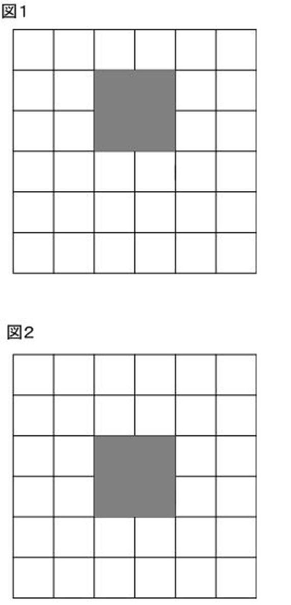
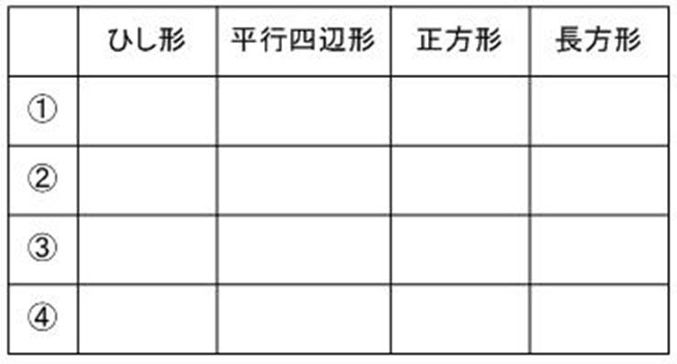
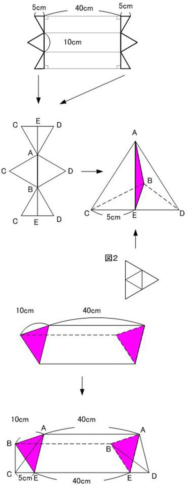
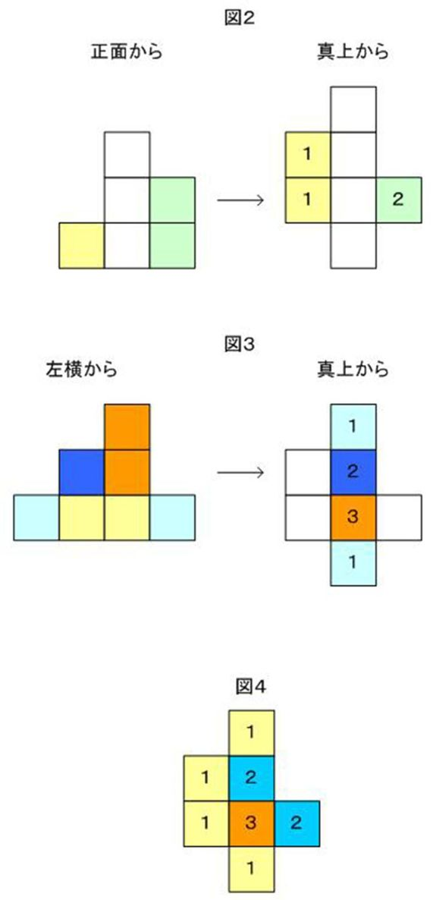
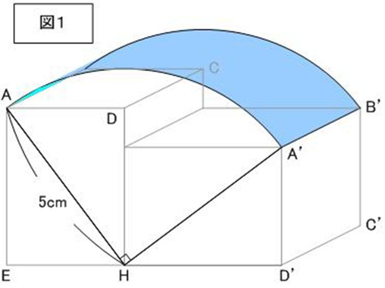

| 難解算数問題 50問の解法集 その１: 難解算数問題集 (Vimagic BOOK) | |
| Unknown | |
| Vimagic (2015) | |
Q1 切断三角柱展開図と体積比
問題
図１，２はある立体の展開図です。図１は、長方形１つ、
正三角形２つ、台形２つからできています。図２は正三角形４つから
できています。図１を組み立ててできる立体の体積は、図２を
組み立ててできる立体の体積の何倍か答えなさい。
Q2 立方体のくり抜き
問題
１辺の長さが６ｃｍの立方体があります。
正面から見たとき図１の灰色の部分になるように四角柱の形の穴を反対側の面まであけます。
次に、ま横から見たとき図２の灰色の部分になるように側面に垂直に元の立体の反対側の面までくり抜き穴をあけます。
このとき、次の問に答えなさい。図の目盛りは１ｃｍです。
（１）できた立体の体積は、もとの立方体の体積より何ｃm3小さいですか。
（２）できた立体の表面積を求めなさい。

Q3 面積比
問題
台形ＡＢＣＤがあります。
ＡＤとＢＣは平行で、ＡＤとＢＣの長さの比は２：３です。ＡＢ上に点Ｐ，ＣＤ上に点Ｑをとったところ、
三角形ＡＤＱ，三角形ＡＰＱ、三角形ＰＱＣ、三角形ＰＢＣの面積は、
それぞれ３ｃ㎡、５ｃ㎡、４ｃ㎡、３㎡ となりました。
ＰＱとＡＣの交点を点Ｒとしたとき、次の問に答えなさい。
（１）三角形ＡＰＣの面積を求めなさい。
（２）三角形ＡＰＲの面積を求めなさい。
Q4 立方体上の点の移動
問題
１辺８ｃｍの立方体ＡＢＣＤ－ＥＦＧＨがあります（図１）。
点Ｐが立方体の頂点Ａ→Ｂ→Ｃ→Ｄ→Ｈ→Ｇ→Ｆ→Ｅ→Ａの順に、１秒間に２ｃｍの速さで移動します。
また、点Ｑが頂点Ａ→Ｄ→Ｈ→Ｅ→Ａ→Ｄ→・・・の順に、１秒間に４ｃｍの速さで、点Ｐが移動し終わるまで動きます。
点Ｐ，Ｑが同時に頂点Ａを出発したとき、次の問に答えなさい。
（２）線分ＰＱの長さがもっとも長くなるのは出発して何秒後か答えなさい。
（３）点Ｐ，Ｑがともに立方体の同じ辺上にいるのは、もっとも長くて何秒間か答えなさい。
（４）三角形ＰＱＨが正三角形になるのは出発して何秒後か答えなさい。
Q5 直角二等辺三角形の面積
問題
直角二等辺三角形ＡＢＣの各頂点が、図のように平行な線①、②、③の上にあります。
このとき①と②の間は５ｃｍ、②と③の間は３ｃｍでした。
線②とＡＣの交点をＤとしたとき、三角形ＡＢＣの面積を求めなさい。
Q6 足し算のピラミッド
問題
数の書かれたカードを３枚ならべ、次の操作でカードを増やしていきます。
となり合う左右のカードに書かれた数の和を書いたカードを、 その２枚のカードの間に加える。
たとえば、最初の状態が・・・・・・◎ ① ② のとき、１回目の操作のあと・・・ ◎①①③②
となり、２回目の操作のあと・・・ ◎①①②①④③⑤②となります。
次の問に答えなさい。
（１）最初の状態が、②③①のとき、３回目の操作の後にカードに書かれている数のうち、最も大きい数は何ですか。
（２）最初の状態が、②⑦④のとき、１２回目の操作の後に、右から２番目のカードに書かれている数は何ですか。
（３）最初の状態が、⑪A⑦のとき、１４回目の操作の後に、右から２番目と左から２番目のカードに書かれている数の和が２９０になりました。Aに書いてある数は何ですか。
Q7 正八面体の切断
問題
すべての辺の長さが２０ｃｍの三角すいＡ-ＢＣＤがあります。
この三角すいの辺のまん中の点を図のようにＥ，Ｆ，Ｇ，Ｈ，Ｉ，Ｊとし、点Ｅ，Ｆ，Ｇ，Ｈ，Ｉ，Ｊを１０ｃｍの長さで結べる点どうしを結んでできた立体をＴとします。
このとき、次の問に答えなさい。
（１）立体Ｔの辺の本数を答えなさい。
（２）立体Ｔの各辺のまん中の点をとり、５ｃｍの長さで結べる点どうしを結び、立体Ｓを作るとき、立体Ｓの辺の本数を答えなさい。
（３）三角すいＡ-ＢＣＤの表面積は、立体Ｔの表面積の何倍か答えなさい。
（４）ＢＥ，ＣＦ，ＤＧのそれぞれのまん中の点を通る平面で立体Ｔを切断したとき、立体Ｔの切り口の面積は三角形ＡＢＣの面積の何倍か答えなさい。
Q8 水槽の水（ニュートン算）
問題
容積が３７８Ｌの水そうがあり、常に一定量の水が注ぎこまれています。
この水そうには、毎分一定量の水を排水する５つの同じ管がついています。水そうが満水のとき、２つの管を開いたところ、１２６分で水そうが空になりました。
次に、水そうが満水のとき、５つの管をすべて開いたところ、１８分で水そうが空になりました。
このとき、次の問に答えなさい。
（１）水そうに注ぎこまれる水は、毎分何Ｌですか。
また、水そうの管は、毎分何Ｌの水を排水しますか。
（２）水そうを満水にしてから、５つの管をすべて開きました。
しばらくして１つの管を閉め、さらにしばらくして１つの管を閉め、水そうが空になるまでその状態にしました。
５つの管を開けていた時間と、４つの管を開けていた時間と、３つの管を開けていた時間の
比は、４：４：５でした。
このとき、５つの管すべてを開けていた時間は何分か答えなさい。
Q9 点群から図形を作る
問題
図のように、空間に２７個の点を配置します。これらの点は、
１辺１ｃｍの立方体を８個積み上げて、１辺２ｃｍの立方体を
作ったときの、各頂点に対応します。このとき次の問に答えなさい。
Q10 回転図形
問題
図のように直方体の面の中心を線で結んで、八面体ＡＢＣＤＥＦを作りました。
このとき次の問に答えなさい。円周率は３．１４とし、答えは小数第１位を四捨五入しなさい。
（１）八面体ＡＢＣＤＥＦの体積を答えなさい。
（２）八面体ＡＢＣＤＥＦを、対角線ＢＤを軸として回転させた立体の体積を答えなさい。
（３）八面体から四角形ＡＢＦＤを取り出すと、ＡＤの長さは５ｃｍです。
辺ＡＤを軸として四角形ＡＢＦＤを回転させたとき、できる立体の体積を答えなさい。
Q11 数字のピラミッド
問題
数字が図のように規則的に並んでいます。
（１）２１段目の左から３番目の数字を答えなさい。
（２）２１段目の右から３番目の数字を答えなさい。
（３）2009は何段目の左から何番目か答えなさい。
Q12 道順
問題
図のように、①～⑩までの地点を結ぶ道を考えます。
道は、図にあるように、矢印の方向にしか進むことができません。
このとき、次の問に答えなさい。
（１）スタートから④の地点までいく方法は何通りありますか。
（２）スタートから⑤の地点までいく方法は何通りありますか。
（３）スタートから⑩の地点までいく方法は何通りありますか。
Q13 正三角形を描く
問題
図の線は、平面を同じ大きさの正三角形でしきつめたものです。
図１の正三角形の面積を１ｃ㎡とするとき、次の問に答えなさい。
（１）図２の正三角形の面積を求めなさい。
（２）線の交点を頂点とするような、面積が１３ｃ㎡の正三角形を１つ図４の上に描きなさい。
（３）図３のような、面積がそれぞれ３ｃ㎡、７ｃ㎡、１３ｃ㎡の正三角形で囲まれた三角形ＡＢＣを、図４の上に描きなさい。ただし、
頂点Ａ，Ｂ，Ｃは線の交点になるようにします。頂点Ａ，Ｂ，Ｃの記号も書きなさい。
（４）三角形ＡＢＣの面積を求めなさい。
Q14 数のパズル
問題
下の図の○の中に１～９の数字を入れて、各辺の数字の和が１７になるようにします。４，５，６が図のようにあるとき、
Ａ～Ｆまでに入る数字を答えなさい。（答えは何通りかあるので、そのうち１つを答えなさい。ただし数字は１度しか使えないものとします。）
Q15 場合の数
問題
１～８の数字が１つずつ書かれたカードが８枚あります。
このカードから３枚取り出し、左から１枚ずつ並べて、３けたの整数を作ります。このとき、次の問に答えなさい。
（１）できる整数のうち、百の位の数字と一の位の数字を掛けた数と 十の位の数字が等しいものは何通りありますか。
（２）できる整数のうち、百の位の数字と一の位の数字の差が 十の位の数字と等しいものは何通りありますか。
Q17 席替えの法則
問題
あるクラスの教室には１～１２までの１２の座席があり、Ａ君、Ｂ君、Ｃ君、Ｄ君、Ｅ君、Ｆ君、Ｇ君、Ｈ君、Ｉ君、Ｊ君、Ｋ君、Ｌ君の１２人の
生徒が図１のように座っています。
このクラスでは、表１の指示に従って席がえが行われます。このとき、次の問に答えなさい。
（１）１回席がえを行ったとき、最初の席と席が入れ替わるのは誰と誰ですか。
（２）４回席がえを行ったとき、最初の席と同じ席に人は誰か、すべて答えなさい。
（３）初めて全員が同時に最初の席に戻るのは、何回席がえを行ったときか答えなさい。
Q18 おはじきの置き方
問題
図は正方形の台を真上から見た図です。この台の四隅（よすみ）と中央におはじきを置くときの置き方について次の問に答えなさい。
ただし、台は回転するので、回転して同じになる置き方は同じものとします。
（１）赤いおはじき２個、白いおはじき３個を台に置くとき、置き方は何通りありますか。
（２）赤いおはじき２個、白いおはじき２個、青いおはじき１個を台に置くとき、置き方は何通りありますか。
Q19 時計と暦
問題
時刻（午前と午後の区別もできる）と月日を表示できる２つの時計Ａ，Ｂがあります。
時計Ａは正確な時を刻みますが、時計Ｂは時計Ａが２５時間進む間に２４時間しか進みません。
この２つの時計を２００４年２月２日午前１０時に、２つの時計Ａ，Ｂを正確な時刻・月日にあわせました。
このとき次の問に答えなさい。
（１）２つの時計Ａ、Ｂが次に同時刻を表示するのは何年何月何日の午前あるいは午後の何時何分か答えなさい。
（２）２つの時計Ａ，Ｂが次に同時刻で、同じ月日を表示するのは何年何月何日の午前あるいは午後の何時何分か答えなさい。
Q20 投影図
問題
下の図１は、１辺２ｃｍの立方体を何個か積み上げた立体を正面、真上、左横から見た図です。このとき次の問に答えなさい。
（１）積み上げられた立方体は何個ありますか。
（２）この立体の表面積を答えなさい。
Q21 対角線によって切断される正方形の数
問題
（１）図１のような、３辺の長さが５ｃｍ、１２ｃｍ、１３ｃｍの直角三角形の中に、１辺の長さが１ｃｍの正方形をすき間なく
並べていくとき、最大で何個の正方形を並べることができますか。

（２）３辺の長さが１５ｃｍ、３６ｃｍ、３９ｃｍの直角三角形の中に同様に１辺の長さが１ｃｍの正方形をすき間なく並べていくとき、
最大で何個の正方形を並べることができますか。
Q22 三角柱の切断
問題
図１のような、底面が正三角形の三角柱ＡＢＣ－ＤＥＦがあり、頂点Ｂを目盛り「０」として、頂点Ｅを通り、頂点Ｆまで、１ｃｍごとに１８までの目盛りがあります。
点Ｐ，Ｑが辺ＢＥおよびＥＦの目盛りの上のどこかにあるとき、次の問に答えなさい。
なお、三角すいの体積＝底面積×高さ÷３ で求められるものとします。
（１）３点Ａ，Ｃ，Ｐを通る平面で三角柱を切断すると、頂点Ｂをふくむ方の立体（立体Ⅰとする）と頂点Ｄをふくむ方の立体（立体Ⅱとする）の体積比が１：１１になりました。
点Ｐは、いくつの目盛りの上にありますか。
（２）点Ｐが「１４」の目盛りの上にあるとき、立体Ⅰと立体Ⅱの体積比を求めなさい。
次に、図３のような１辺１ｃｍの三角柱（立体Ｚ）を積み重ねて、図２のように三角柱ＡＢＣ-ＤＥＦを作り直しました。
（３）点Ｐが「９」の目盛りの上に、点Ｑが「１５」の目盛りにあるとき、３点Ａ，Ｃ，Ｐを通る平面と、３点Ａ，Ｃ，Ｑを通る平面で三角柱
ＡＢＣ－ＤＥＦを切断しました。頂点Ｂをふくむ方の立体（立体Ⅰ）と、頂点Ｄをふくむ方の立体（立体Ⅱ）と、残りの立体 （立体Ⅲ）の体積比を求めなさい。
（４）（３）のとき、立体Ⅲの中に、切断されなかった立体Ｚは何個ありますか。
Q23 樹形図
問題
０，１，２だけを並べて整数を作っていきます。
ただし、左端には０はこないようにして、右端は必ず０にします。
また、となりあった数は異なるようにします。
このとき次の問に答えなさい。
（１）５けたの整数は何通り作れますか。
（２）８けたの整数は何通り作れますか。
Q24 円の中を回転する正三角形
問題
図１は円周上に３頂点がある正三角形の図です。この正三角形と同じ大きさの２枚の正三角形Ａ，Ｂを用意し、図の正三角形の上に
ぴったりと重ね、円の中心を中心として次のように回転させます。
正三角形Ａは、時計の針と同じ向きに１秒間に７°の速さで回転し、正三角形Ｂは、時計の針と反対の向きに１秒間に４°の速さで回転します。
最初は３つの正三角形はぴったりと重なっていて、正三角形Ａ，Ｂが同時に回転を始めます。このとき次の問に答えなさい。
（１）正三角形Ａ，Ｂが重なる部分が初めて正六角形になるのは回転を始めてから何秒後ですか。
（２）回転を始めてから、３つの正三角形が初めてぴったり重なる のは、回転を始めてから何秒後ですか。
（３）３つの正三角形が３枚とも重なる部分が、３回目に正九角形 になるのは、回転を始めてから何秒後ですか。
Q25 立方体の切断
問題
１辺１２ｃｍの立方体ＡＢＣＤ－ＥＦＧＨがあります。
（１）ＡＢ、ＢＣのまん中に点Ｍ，Ｎをとり、３点Ｆ，Ｍ，Ｎを通る平面で立方体を切断するとき、頂点Ｈをふくむ方の立体の表面積を求めなさい。
（２）ＡＥを２：１に分ける点をＰ、ＣＧのまん中の点をＱとして、 ３点Ｄ，Ｐ，Ｑを通る平面で立方体を切断するとき、頂点Ｈをふくむ方の立体の体積を求めなさい。
Q26 ビーズの輪
問題
青と白のビーズがたくさんあります。ここから６個のビーズを選び輪を作ります。
次の問のとき、何種類の輪を作ることができるか答えなさい。
ただし、回転させたり裏返して同じになるものは区別しないものとします。
（１）青いビーズ２個と白いビーズ４個を使う場合
（２）青と白の両方を使い輪を作る場合
Q27 部屋の行き方
問題
ある家には下図のように１番から１６番までの正方形の部屋があり、となり合う部屋同士は行き来できるようになっています。
たとえば、６番の部屋からは２，５，７，１０番の部屋へ行けます。
１番の部屋が入り口になっていて、ここから一番奥の１６番の部屋まで行く行き方について、次の問に答えなさい。ただし、同じ部屋を２回通るときは２回と数え、部屋はどのような順番で通ってもよいものとします。
（１）７番の部屋を必ず通るとき、最短の行き方は何通りありますか。
（２）７番と１３番の部屋を必ず通るとき、最短の行き方は何通りありますか。
（３）７番、１０番、１３番の部屋を必ず通るとき、最短の行き方は 何通りありますか。
Q28 図形の移動
問題
下の図のような長方形ＰＱＲＳと角Ｂが直角である直角三角形ＡＢＣがあります。長方形ＰＱＲＳのまわりを三角形ＡＢＣを次のように回転させます。
ただし、はじめ点Ａは点Ｐに、点Ｂは辺ＰＳ上にあるものとします。
① 三角形ＡＢＣを点Ｂを中心に、点Ｃと点Ｓに重なるまで時計回り に回転させます。
② 次に三角形ＡＢＣを点Ｃを中心に、点Ａと点Ｒが重なるまで時計回りに回転させます。
③ 次に三角形ＡＢＣを点Ａを中心に、点Ｂが辺ＱＲ上にくるまで 時計回りに回転させます。
（１）この回転を通して、三角形ＡＢＣが動いた部分を太線で囲み 図示しなさい。
（２）（１）で図示した太線の長さを答えなさい。
ただし、答えは 小数第２位を四捨五入して小数第１位まで求めなさい。
Q29 数のパズル
問題
（１）３けたの整数があります。このうち、どの２つの位の数を足しても９にならない整数は何個ありますか。
（２）４けたの整数があります。このうち、どの２つの位の数を足しても９にならない整数は何個ありますか。
（３）４けたの整数があります。このうち、どの位の数も異なり、 どの２つの位の数を足しても９にならない整数は何個ありますか。
Q30 四角形の性質
問題
次の①から④について、ひし形、平行四辺形、正方形、長方形の性質として、正しい場合は○を、そうでない場合は×を下の表に書きなさい。

①２本の対角線によってできる４つの三角形は全部二等辺三角形である。
②２本の対角線によってできる４つの三角形は全部直角三角形 である。
③２本の対角線によってできる４つの三角形は全部面積が等しい。
④２本の対角線によってできる４つの三角形は全部同じ形で
同じ大きさで、ぴったり重ね合わせることができる。
Q32 平面図形の角度
問題
下の図は、点Ｂを中心とする円の一部です。いまＡＤを折り目として折ったとき、点Ｂが円周上の点Ｅ に重なりました。
このとき角ＢＣＥ の大きさを求めなさい。
Q33 図形パズル
問題
下図のような１辺１２ｃｍの正方形の紙があります。
この紙に図のように２本の線を引き、この線にそって紙を切ると、３つの部分に分かれます。
３つの紙は置き方をかえて長方形を作ることができます。
そのときの長方形の短い方の辺の長さを求めなさい。
Q35 数の組み合わせ
問題
Ａ，Ｂ，Ｃの３つの数は、１から９のいずれかの整数です。
いま、百の位の数がＡ，十の位の数がＢ、一の位の数がＣである３けたの整数を「ＡＢＣ」のように表すとき、
「ＡＢＣ」＋「ＢＣＡ」＋「ＣＡＢ」＝１７７６
となるような、Ａ，Ｂ，Ｃの数字の組み合わせは何通りありますか。
ただし、Ａ＞Ｂ＞Ｃとします。
Q36 回転体の体積
問題
下図のような直方体ＡＢＣＤ－ＥＦＧＨ があり、面ＥＦＧＨが床と接しています。
この直方体を、辺ＧＨを動かすことなく面ＣＤＨＧが床につくまで９０度回転させます。このとき、次の問に答えなさい。

（１）辺ＡＢが通った部分の面積を求めなさい。
（２）直方体ＡＢＣＤ－ＥＦＧＨが通った部分の体積を求めなさい。
Q37 棒の可動範囲
問題
図１のように棒（ア）、（イ）、（ウ）をつないだものを机の上に置きます。
この棒は、つなぎ目の部分で図２のように動かすことができますが、棒と棒の角度は９０度より小さくはできません。
棒（ア）の長さ＝６ｃｍ、（イ）の長さ＝４ｃｍ、（ウ）の長さ＝６ｃｍ で、棒（ア）を机に図１のように固定したとき、次の問に答えなさい。
（１）棒（ウ）を動かすことができる部分を図に示しなさい。
（２）（１）の部分の周囲の長さを求めなさい。
（３）（１）の部分の面積を求めなさい。
Q38 ひもで巻いたときの最短
問題
下図の三角すいＡ－ＢＣＤは、すべての面が１辺の長さが３ｃｍの正三角形です。
辺ＡＢのまん中に点Ｅ をとり、点Ｅ にひもをつけ、三角すいのすべての面を通るように、ひもを１周巻きつけます。このとき
次の問に答えなさい。
（１）ひもの長さが最も短いとき、その長さを答えなさい。
（２）ひもの長さが最も短いとき、そのひもにそって三角すいを 切断しました。
このとき切り口の形と、その面積を答えなさい。
Q39 平面図形の面積
問題
１つの面積が６０ｃ㎡の正六角形を３つ合わせた下のような図形があります。
（１）図１の色のついた部分（三角形ＡＢＣ）の面積を答えなさい。
（２）図２の色のついた部分（四角形ＡＰＱＲ）の面積を答えなさい。
Q40 長方形の中に三角形を作る場合の数
問題
たて１ｃｍ、よこ５ｃｍの長方形ＡＢＣＤがあります。
ＡＤ，ＢＣを５等分する点を、下図のようにＥ，Ｆ，Ｇ，Ｈ，Ｉ，Ｊ，Ｋ，Ｌとするとき、次の問に答えなさい。
（１）Ｂ，Ｅ，Ｆ，Ｇ，Ｈ，Ｃ の６個の点から、２つを選ぶ組み合わせは何通りあるか答えなさい。
（２）Ａ～Ｌの１２個の点から、３つの点を選んで三角形を作るとき、 できる三角形は何通りありますか。
（３）（２）の三角形のうち、直角三角形は何通りありますか。
（４）（２）の三角形のうち、直角二等辺三角形は何通りありますか。
Q41 マス目に入る数
問題
マス目に１から順にマス目の個数までの整数を、右へいくほど、下へいくほど大きいものを入れていきます。
たとえば、図１のようなマス目には、図２のように２通りの数字の入れ方があります。
このとき、次の問に答えなさい。
（１）、（２）、（３）のマス目に入る数字の入れ方を 図２のように、すべて書きなさい。
（４）のマス目に入る数字の入れ方は何通りあるか説明しなさい。
Q42 クラスの人数（ベン図）
問題
４３人のクラスで、スポーツ好きな生徒が２８人、音楽好きな生徒が２１人います。
両方とも好きな生徒は、もっとも多い場合で何人いますか。また、もっとも少ない場合で何人ですか。
Q43 計算問題
問題
（１）123＋234＋345＋456＋567＋678＋789＋891＋912
（２）（135 351 513）÷111 ＋（2468＋4682＋6824＋8246）÷1111
（３）１３５/１１１＋３５７/１１１＋５７９/１１１＋７９１/１１１＋９１３/１１１
（４）（6789＋7896＋8967＋9678）÷（1234＋2341＋3412＋4123）
（５）１２３＋２３４＋３４５＋４５６＋５６７＋６７８＋７８９
Q45 計算問題
問題
次の計算式を解きなさい。
（１） １×１/２＋２×（１/２＋１/３）＋３×（１/２＋１/３＋１/４）＋４×（１/３＋１/４）＋５×１/４
（２）１＋１/２＋１/３＋１/４＋３×（１/２＋１/３＋１/４）＋５×（１/３＋１/４）＋７×１/４
Q46 既約分数の和
問題
次のように、分母が2009の分数が2008個あります。
（１）このうち、既約分数（約分できない分数）は何個ありますか。
（２）（１）の分数をすべて足すといくらになりますか。
Q47 数の性質＆規則性
問題
次のように、ある規則に従って分数が並んでいます。
このとき次の問に答えなさい。
（１）この中に、１/５０より大きい分数は何個あるか求めなさい。
（２） （１）の中で最も１/５０に近い分数を答えなさい。
Q48 長方形の面積
問題
下の図で、長方形ＡＢＣＤの辺ＡＢの長さは４cm、辺ＢＣの長さは８cmです。
このとき、対角線ＡＣを１辺とし、点Ｄを通る長方形ＡＣＥＦの面積を求めなさい。
Q49 虫食い算
問題
Ａは４けたの整数で、それぞれの位は同じ数字からなり、Ｂは４けたの整数で、それぞれの位は２種類の数字からなっています。
ＡとＢの積を計算したら「44448888」になりました。
ＡとＢを求めなさい。
Q50 立方体の切断
問題
体積が７２m3 の立方体ＡＢＣＤ－ＥＦＧＨについて、辺ＢＦと辺ＣＧのまん中の点をそれぞれ点Ｍ，Ｎとします。
（１）この立方体を３点Ａ，Ｂ，Ｇを通る平面で切った切り口の図と、３点Ａ，Ｍ，Ｎ を通る平面で切った切り口の図を書き込みなさい。
いま、この立方体を３点Ａ，Ｂ，Ｇを通る平面と、３点Ａ，Ｍ，Ｎを通る
平面で切ると、４つの立体に分けることができます。その中で、ＢＭ，ＭＦ，ＣＮ，ＮＧを含む立体をそれぞれＰ，Ｑ，Ｒ，Ｓとします。
このとき、次の問に答えなさい。
ただし、角すいの体積は底面積×高さ÷３です。
（２）立体Ｐと立体Ｒの体積の和は何ｃm3ですか。
（３）立体Ｐは三角すいとなります。この三角すいの体積は何ｃm3 ですか。
（４）立体Ｓの体積は何ｃm3ですか。
A1 切断三角柱展開図と体積比
解答

図２の展開図を組み立てると、三角すいになります。
図１の展開図を組み立てると、高さ４０ｃｍの三角柱の底面と半対面に、図２を組み立てたのと同じ、三角すいＡ-ＢＣＤの半分がついたものになります。
図１、図２のものを組み立てたものは、ともに三角形ＡＢＥを底面とした三角柱とみなすことができます。
切断された三角柱の体積は 底面積×高さの平均 で求められるので、
図１の三角柱の体積は、
三角形ＡＢＥの面積×（４０＋４０＋５０）÷３
図２の三角すいの体積は、
三角形ＡＢＥの面積×（０＋０＋１０）÷３
よって、図１の三角柱の体積が図２の三角すいの体積の１３０÷１０＝１３倍 となります。
A2 立方体のくり抜き
解答
（１）正面からの穴と、ま横からの穴は、図３のように重なります。
重なった黄色い部分の体積は、２ｃｍ×２ｃｍ×１ｃｍ＝４ｃm3 なので、立方体からくり抜かれた体積は、
２×２×６×２－４＝４４ｃm3 なので、できた立体の体積は、元の立方体の体積より４４ｃm3 小さいことになります。
（２）立方体の内部の面積は、図３のくり抜かれた部分を前後、左右、上下から見て求めます。すると図４，５，６のようになります。
青い部分が表面積となりますので、その面積を求めると、図４：（２×６－２×１）×２＝２０ｃ㎡
図５：（２×６－２×１）×２＝２０ｃ㎡
図６：２×２×５×２＝４０ｃ㎡
それぞれ２面ずつあることに注意して、合計で８０ｃ㎡ です。
立方体の表面は、くり抜かれた面が４面、そのままの面が２面で、
（６×６－２×２）×４＋６×６×２＝１２８＋７２＝２００ｃ㎡
よって、できた立体の表面積＝８０＋２００＝２８０ｃ㎡ となります。
A3 面積比
解答
（１）台形ＡＢＣＤの面積は、３＋５＋４＋３＝１５ｃ㎡ で、
ＡＤ：ＢＣ＝２：３なので、
三角形ＡＣＤの面積：三角形ＡＢＣの面積＝２：３
となり、三角形ＡＢＣの面積＝１５÷５×３＝９ｃ㎡ となります。
三角形ＰＢＣの面積が３ｃ㎡ なので、三角形ＡＰＣの面積＝９－３＝６ｃ㎡ です。
（２）ＰＲの長さ：ＲＱの長さの比を考えると、
ＰＲ：ＲＱ＝三角形ＡＰＲの面積：三角形ＡＱＲの面積 ＝三角形ＰＲＣの面積：三角形ＱＲＣの面積となります。
よって、（三角形ＡＰＲの面積＋三角形ＰＲＣの面積） ： （三角形ＡＱＲの面積＋三角形ＱＲＣの面積）＝ＰＲ：ＲＱ
すなわち、三角形ＡＰＣの面積：三角形ＡＱＣの面積＝ＰＲ ： ＲＱ となります。
三角形ＡＰＣの面積は、（１）より６ｃ㎡、三角形ＡＱＣの面積は、
三角形ＡＰＱの面積＋三角形ＰＱＣの面積－三角形ＡＰＣの面積＝５＋４－６＝３ｃ㎡ なので、
ＰＲ：ＲＱ＝６：３＝２：１ となります。
よって、三角形ＡＰＲの面積：三角形ＡＱＲの面積＝２：１より、
三角形ＡＰＲの面積＝５÷３×２＝３と１/３ｃ㎡ となります。
★ＰＱを基準に考えましたが、ＡＣを基準にしても同様に求められます。
A4 立方体上の点の移動
解答
（１）点Ｐは４秒間で、ひとつの頂点から次の頂点まで移動します。
点Ｑは２秒間で、ひとつの頂点から次の頂点まで移動します。
すなわち、点Ｐがひとつの頂点から次の頂点まで移動するとき、点Ｑは２つ先の頂点まで移動します。
点Ｐが頂点Ｇに着くまでに、Ａ→Ｂ→Ｃ→Ｄ→Ｈ→Ｇ と、５個の頂点を移動するので、点Ｑは１０個移動することになります。
点Ｑは４個の頂点を移動すると頂点Ａに戻るので、１０÷４＝２．．．２ より、
点Ｐが頂点Ｇにいるとき、点Ｑは頂点Ｈにいることがわかります。
（２）立方体の対角線：ＡＧ，ＢＨ，ＣＥ，ＤＦとＰＱが重なるとき、ＰＱの長さはもっとも長くなります。
点Ｐがひとつの頂点を移動する間に点Ｑは２個先の頂点へ移動するので、同時に頂点Ａを出発すると、点Ｐがどこかの頂点にいるとき、点Ｑは頂点ＡまたはＨにいることになりますので、
立方体の対角線：ＡＧ，ＢＨ とＰＱが重なるかどうかを調べます。
（１）より、点Ｐが頂点Ｇにいるとき、点Ｑは頂点Ｈにいるので、ＡＧとＰＱは重なりません。
点Ｐが頂点Ｂにいるときは、点Ｑは頂点Ｈに移動しています。
これは８ｃｍ÷２ｃｍ/秒＝４秒後 となります。
（３）点Ｐと点Ｑの動きが重なるのは、立方体の辺ＤＨとＥＡです。
点Ｐが立方体の各頂点上にいるとき、点Ｑが頂点Ａ、Ｈのどちらにいるのかを図２のかっこに示しました。
点Ｐが頂点Ｄにいるとき、点Ｑは頂点Ｈにいて、Ｈ→Ｅ→Ａ と、点Ｐ（頂点Ｄ）から離れてしまうので、同一辺上にいません。
点Ｐが頂点Ｅにいるとき、点Ｑは頂点Ｈにいて、Ｈ→Ｅ→Ａ と、点Ｐに近づいてきて、点Ｐが頂点Ａに着くときに点Ｑも頂点Ａに着きます。
点Ｑが頂点Ｅに着くのは、点Ｐが頂点Ｅを出発して２秒後で、頂点Ａに着くまでの２秒間、点Ｐ，Ｑは辺ＥＡ上にいます。
よって、点Ｐ，Ｑがともに立方体の同じ辺上にいるのは、もっとも長くて２秒間です。
（４）点Ｐが立方体の頂点にいるときについて調べると、三角形ＰＱＨが正三角形になるときなので、点Ｑが頂点Ｈにいるとき、
すなわち、点Ｐが頂点Ｂ，Ｄ，Ｇ，Ｅにいるときは除外され、また、点Ｐが頂点Ａに戻るとき、点Ｑも頂点Ａに着くので、これも除外され、
点ＰがＣ，Ｆにいるときに三角形ＰＱＨが正三角形になります（図３）（３辺の長さが等しい）
点Ｐが頂点Ｃに着くのは、１６÷２＝８秒後、頂点Ｆに着くのは４８÷２＝２４秒後 なので、
答えは８秒後と２４秒後です。
A5 直角二等辺三角形の面積
解答
直角二等辺三角形の面積
頂点Ａ，Ｃから線②へ垂線を下ろし、交点をそれぞれ点Ｅ，Ｆとすると、ＡＥ＝５ｃｍ、ＣＦ＝３ｃｍです。
次に三角形ＡＢＥと三角形ＢＣＦについて、角ＡＢＥ＋角ＢＡＥ＝９０度
角ＡＢＥ＋角ＥＢＣ＝９０度 より、角ＢＡＥ＝角ＥＢＣ
角ＢＣＦ＋角ＥＢＣ＝９０度 より、角ＡＢＥ＝角ＢＣＦ
また、三角形ＡＢＣは直角二等辺三角形なので、
ＡＢ＝ＢＣより、
三角形ＡＢＥと三角形ＢＣＦは合同であることがわかります。
よって、ＢＥ＝ＣＦ＝３ｃｍ、ＡＥ＝ＢＦ＝５ｃｍより、ＥＦ＝５－３＝２ｃｍ
次に、三角形ＡＥＤと三角形ＣＦＤは３つの角が等しいので相似で、その相似比は５：３です。
よって、ＥＤの長さ＝ＥＦの長さ÷８×５＝５/４ｃｍ です。
三角形ＡＢＣの面積は、ＢＤを底辺とする高さ（５＋３）ｃｍの三角形と見れます。
ＢＤ＝ＢＥ＋ＥＤ＝３＋５/４＝１７/４ｃｍ ですから、三角形ＡＢＣの面積＝１７/４×（５＋３）÷２＝１７ｃ㎡ となります。
A6 足し算のピラミッド
解答
（１）最初が２，３，１のとき、１回目の操作で２，５，３，４，１となり、
２回目の操作で２，７，５，８，３，７，４，５，１となりますので、
３回目の操作で最も大きい数になるのは、５＋８＝１３ です。
（２）最初が２，７，４のとき、右から２番目の位置の数は、１回目の操作で、
７＋４＝１１、２回目の操作で、１１＋４＝１５、３回目の操作で、１５＋４＝１９、・・・のように、７＋４×操作回数
となるので、１２回目の操作の後には、７＋４×１２＝５５ です。
（３）最初が１１、A、７のとき、右から２番目の位置の数は、A＋７×操作回数
左から２番目の位置の数は、A＋１１×操作回数 となるので、
１４回目の操作の後、右から２番目の数は、A＋７×１４＝A＋９８
左から２番目の数は、A＋１１×１４＝A＋１５４
この２つの和、すなわち、A×２＋２５２＝２９０なので、
A＝１９ ということがわかります。
A7 正八面体の切断
解答

（１）三角形ＡＢＣ，ＡＣＤ，ＡＢＤ，ＢＣＤは正三角形なので、立体Ｔは１辺の長さ１０ｃｍの、図１のような正八面体なります。
正八面体の辺の数は、１２本です。
（２）正八面体 Ｔ の各辺のまん中の点を結ぶと、図２のように正八面体の１つの面（正三角形）の内部に正三角形ができ、１つの面に３本の辺ができるので、立体Ｓの辺の本数は、
３本×８面＝２４本 となります。
（３）三角形ＥＦＨの面積を①とすると、正八面体Ｔの表面積は８面あるので、①×８＝⑧ です。
正方形ＡＢＣの面積は、図３のように、三角形ＥＦＨの面積の４倍で、①×４＝④で、４面あるので、④×４＝⑯です。
よって、三角すいＡ-ＢＣＤの表面積は、立体Ｔの表面積の２倍です。
（４）ＢＥ，ＣＦ，ＤＧのまん中の点を、それぞれ点Ｐ，Ｑ，Ｒとすると、三角形ＰＱＲは正三角形です。
また、図４のように、ＰＱとＥＨ，ＦＨの交点をＳ，Ｔとすると、三角形ＥＰＳ，ＳＨＴ，ＦＱＴはすべて合同な正三角形なので、
ＰＳ＝ＳＴ＝ＴＱとなります。
三角形ＡＢＣ以外の三角形ＡＣＤ，ＡＢＤについても同じ図になるので、三角形ＰＱＲは図５のようになります。
すると、立体Ｔの切り口（色のついた部分）は正六角形になり、三角形ＰＱＲの面積の２/３ であることがわかります。
図４より、ＢＣ：ＰＱ＝４：３で、三角形ＡＢＣの面積：三角形ＰＱＲの面積＝４×４：３×３＝１６：９
より、三角形ＰＱＲの面積は三角形ＡＢＣの面積の９/１６ なので、立体Ｔの切り口の面積は、三角形ＡＢＣの面積の
９/１６ × ２/３ ＝ ３/８ （倍） ということになります。
A8 水槽の水（ニュートン算）
解答
（１）1つの管が１分間に排水する水の量をＡリットルとすると、２つの管で１２６分に排水された量は、
Ａ×２×１２６＝２５２×Ａ（Ｌ）・・・①
５つの管で１８分に排水された量は、
Ａ×５×１８＝９０×Ａ（Ｌ）・・・②
①と②の差：１６２×Ａ（Ｌ）は、１２６－１８＝１０８分間に注ぎこまれた水の量に等しいので、水そうに注ぎこまれる水は、１分間に
１６２×Ａ÷１０８＝１．５×Ａ（Ｌ） となります。
５つの管を開けると、１８分で水そうの水はなくなるので、
３７８＋１．５×Ａ×１８＝９０×Ａ で、３７８＝６３×Ａより、
Ａ＝６（Ｌ）、水そうに注ぎこまれる水は、１分間に６×１．５＝９（Ｌ）となります。
（２）５つ、４つ、３つの管を開けていた時間を④、④、⑤分とすると
３７８＋９×（④＋④＋⑤）＝５×６×④＋４×６×④＋３×６×⑤という式が成り立ちます。
これを解くと、①＝２（分） となるので、５つの管を開けていた時間は、２×４＝８分 になります。
A9 点群から図形を作る
解答
（１）立方体を図１のように３つの頂点を通る平面で切断すると、切り口は正三角形になるので、これと平行に、２７個の点を通る面を考えると、まず図２のような切り口があります。
次に、図２から切り口を奥へ移動させると図３のような切り口が考えられます。
このとき、小さい正三角形４個、大きい正三角形１個の合計５通りの正三角形を作ることができます。
さらに切り口を奥へ移動させると、図４のような切り口になります。
この切り口は正六角形になり、７個の点を通りますので、小さい正三角形６個と、大きい正三角形２個の合計８通りの正三角形を作ることができます。
さらに切り口を奥へ移動させると、図５，６のようになり、
これはそれぞれ図３，２と同じ形の切り口で、作れる正三角形は、それぞれ５通り、１通りです。
よって、この方向からの切り口でできる正三角形は、１＋５＋８＋５＋１＝２０通りとなります。
切り口を考える方向は、図７のように４方向あるので、２０×４＝８０通りの正三角形ができます。
（２）正方形は、立方体の面と平行に立方体を切断していくと現れます。
すると、ひとつの面に９個の点があるので、できる正方形は、図８，９のように１つの面につき、６通りの正方形ができます。
３つの面で２７個の点すべてを通ることになるので、１方向につき６×３＝１８通りの正方形ができ、
①前後 ②左右 ③上下 の３方向から立方体を見れることから、合計で ３×１８＝５４通りの正方形ができます。
A10 回転図形
解答
（１）八面体ＡＢＣＤＥＦは、四角形ＢＣＤＥを底面とする、高さ３ｃｍの四角すい２つから成る立体です。四角形ＢＣＤＥは、
図１のように１辺８ｃｍの正方形の半分の面積なので、八面体ＡＢＣＤＥＦの体積は、８×８÷２×６÷３＝６４ｃm3 となります。
（２）ＢＤを軸とすると、四角形ＡＣＦＥが回転します。
図２のように、ＡＦ＝６ｃｍ、ＣＥ＝８ｃｍ なので、ＣＥを直径とした円の方が大きくなり、ＢＤを軸として立体ＡＢＣＤＥＦを回転させると、
この円を底面とする、高さ４ｃｍの円すいが２つできます。
よって、この立体の体積は、
（４×４×３．１４×４÷３）×２＝１３３．９・・・≒１３４ｃm3 となります。
（３） 四角形ＡＢＦＤは、ひし形で、すなわち、ＡＤとＢＦは平行です。
よって、四角形ＡＢＦＤをＡＤを軸として回転させると、軸：ＡＤからＢＦまでの長さを幅とした円柱のようなものができることになります。
図３のように、ひし形ＡＢＦＤの面積は、たて６ｃｍ、よこ８ｃｍの長方形の面積の半分に等しく、２４ｃ㎡です。
また、ＦからＡＤに下ろした垂線の足をＰとすると、ＡＤ×ＦＰ＝ひし形ＡＢＦＤの面積 なので、ＦＰ＝２４/５（ｃｍ） とわかります。
ＡＤを軸として、ひし形ＡＢＦＤを回転させると、三角形ＦＰＤを回転させたものと、四角形ＡＢＦＰと回転させたものに分けられます。
ＢからＡＤへ下ろした垂線の足をＱとすると、図４のように、三角形ＡＢＱと三角形ＤＦＰは合同なので、
三角形ＡＢＱをＡＤを軸として回転させた立体（円すい）と、
三角形ＤＦＰをＡＤを軸として回転させた立体（円すい）は、
まったく同じものとなります。
よって、ひし形ＡＢＦＤをＡＤを軸として回転させた立体の体積は、長方形ＰＱＢＦをＡＤを軸として回転させた立体（円柱）の体積と
等しくなり、ＰＱ＝ＰＡ＋ＡＱ＝ＰＡ＋ＤＰ＝５ｃｍ より、体積は
２４/５ × ２４/５ ×３．１４×５ ＝ ３６１．７・・・
≒ ３６２ （ｃm3） となります。
A11 数字のピラミッド
解答
（１）偶数段目の一番左の数字は、それまでに並んだ数字の個数に等しく、２０段目の一番左の数字は、
１＋２＋３＋・・・＋２０＝２１０ です。
よって、２１段目の左から３番目の数字は、２１０＋３＝２１３ です。
（２）奇数段目の一番右の数字は、それまでに並んだ数字の個数に等しく、２１段目の一番右の数字は、
１＋２＋３＋・・・＋２１＝２３１ です。
よって、２１段目の右から３番目の数字は、２３１－２＝２２９ です。
（３）７０×７１÷２＝２４８５ （１～７０段目までの個数）
６５×６６÷２＝２１４５ （１～６５段目までの個数）
２１４５－６５＝２０８０ （１～６４段目までの個数）
２０８０－６４＝２０１６ （１～６３段目までの個数）
以上の計算より、２００９は６３段目にあることがわかります。
１～６２段目までの個数は２０１６－６３＝１９５３ なので、６２段目の一番右が１９５３で、２００９－１９５３＝５６ より、
２００９は６３段目の左から５６番目にあります。
A12 道順
解答
道の通り方を図に書き込むと、上図のようになります。
（１）④の地点まで行く方法は３通り
（２）⑤の地点まで行く方法は５通り
（３）⑩の地点まで行く方法は５５通り となります。
A13 正三角形を描く
解答
（１）図２の正三角形の１辺は、図５のように、４つの１ｃ㎡の正三角形からなる平行四辺形の対角線になっています。
よって、この正三角形は、中央の１ｃ㎡の正三角形と、４÷２＝２ｃ㎡の三角形が３個集まったものなので、
その面積は、１＋２×３＝７ｃ㎡ となります。
（２）図６のような正三角形は、面積が１３ｃ㎡となります。
６個の正三角形から成る平行四辺形の対角線を１辺とする
正三角形は、中央に４つの正三角形と、６÷２＝３ｃ㎡の三角形３個でできているので、面積は４＋３×３＝１３ｃ㎡です。
（３）１３ｃ㎡の正三角形は（２）で描いたので、そこに図を加えていきます。
まず、（１）で７ｃ㎡のものがわかっているので、それを描くと、図７のようになります。
さらに３ｃ㎡の正三角形を加えると描き上げることができます。
（４）三角形ＡＢＣは、図８のように分けて面積を求めることができ、緑の部分は同じ面積になるので、辺ＡＣは正三角形６個から成る
平行四辺形の対角線になり、辺ＡＢは正三角形２個から成る平行四辺形の対角線となり、中央に１つの正三角形が残ります。
よって、三角形ＡＢＣの面積は、６÷２＋２÷２＋１＝５ｃ㎡ となります。
A14 数のパズル
解答
Ａ＋４＋Ｂ＋Ｃ＝１７・・・①
Ｃ＋Ｄ＋６＋Ｅ＝１７・・・②
Ａ＋５＋Ｅ＋Ｆ＝１７・・・③
①＋②＋③を計算すると、
Ａ＋４＋Ｂ＋Ｃ＋Ｃ＋Ｄ＋６＋Ｅ＋Ａ＋５＋Ｅ＋Ｆ＝５１で、整理すると
（Ａ＋Ｃ＋Ｅ）＋（Ａ＋Ｂ＋Ｃ＋Ｄ＋Ｅ＋Ｆ＋４＋５＋６）＝５１ となり、
Ａ＋Ｂ＋Ｃ＋Ｄ＋Ｅ＋Ｆ＋４＋５＋６＝１＋２＋３＋４＋５＋６＋７＋８＋９＝４５ なので、
Ａ＋Ｃ＋Ｅ＝５１－４５＝６ で、１＋２＋３＝６より、
Ａ，Ｃ，Ｅ は、１，２，３のどれかであることがわかります。
すると、Ｂ，Ｄ，Ｆ は７，８，９のどれかということになります。
Ａが１のとき、Ｃには３しか入りません。
（Ｃ＝２のとき、Ａ（１）＋４＋Ｂ＋Ｃ（２）＝１７で、Ｂ＝１０となるので）
Ｂ＝９となりますが、Ａ（１）＋５＋Ｆ＋Ｅ（２）＝１７より、Ｆ＝９ となり、
９が２回登場するので、成り立ちません。
Ａ＝２のとき、Ｃ＝３です。
（Ｃ＝１のとき、Ａ（２）＋４＋Ｂ＋Ｃ（１）＝１７より、Ｂ＝１０となるので）
すると、Ｂ＝８、Ｅ＝１となります。
すると、Ｆ＝９、Ｄ＝７ となり、成り立ちます。
なお、Ａ＝３のとき、Ｃ，Ｅには１，２のどちらも可能です。
Ｃ＝１、Ｅ＝２のとき、
Ｂ＝９、Ｄ＝８、Ｆ＝７ となり、成り立ちます。
Ｃ＝２，Ｅ＝１のとき、
Ｂ＝８、Ｄ＝８、Ｆ＝８ となり、成り立ちません。
よって、当てはまる（Ａ，Ｂ，Ｃ，Ｄ，Ｅ，Ｆ）の組み合わせは、
（２，８，３，７，１，９） または （３，９，１，８，２，７） となります。
A15 場合の数
解答
（１）百の位または一の位に「１」があると、掛け算をした結果はもう一方の位の数と等しくなるので、「１」は含まれません。
よって、考えるのは２～８の数字についてです。
小さい方の数字から考えると、２×３＝６、２×４＝８、２×５＝１０・・・×
３×４＝１２・・・× 以降は不適。
よって、百の位、一の位に入る数字の組は、（２，３）、（３，２）、（２，４）、（４，２）の４通りとなります。
（２）百の位の数字と一の位の数字の差が十の位の数字と等しくなる組み合わせを調べていきます。
差が１の場合・・・（２，１）、（３，２）、（４，３）、（５，４）、（６，５）、（７，６）、（８，７） 以上６×２通り
差が２の場合・・・ （３，１）、（４，２）、（５，３）、（６，４）、（７，５）、（８，６）以上５×２通り
差が３の場合・・・（４，１）、（５，２）、（６，３）、（７，４）、（８，５）・・・以上４×２通り
差が４の場合・・・（５，１）、（６，２）、（７，３）、（８，４）・・・以上３×２通り
差が５の場合・・・（６，１）、（７，２）、（８，３）・・・以上３×２通り
差が６の場合・・・（７，１）、（８，２）・・・以上２×２通り
差が７の場合・・・（８，１）・・・以上１×２通り
合計すると、１２＋１０＋８＋６＋６＋４＋２＝４８通り となります。
A16 特殊な立体図形
解答
図３の赤線部分が、６８．８ｃｍになります。
外側の円の半径を□、内側の円の半径を○とすると、赤い部分の長さは、
（□×２×３．１４＋○×２×３．１４）×２４０/３６０＋３×２＝６８，８なので、□＋○＝１５ｃｍとなります。
図４のように、□と○の差は３ｃｍ で、□＋○＝１５ｃｍ より、
□＝９ｃｍ、○＝６ｃｍ ということがわかります。
よって、図１の立体の体積は、
（９×９－６×６）×３．１４×２４０/３６０×３＝２８２．６ ｃm3です。
A17 席替えの法則
解答
（１）表１より、３番の席の人は８番の席へ、８番の席の人は３番の席へ移動するので、３番：Ｃ と ８番：Ｈ が入れかわります。
（２）表１の席の移動を整理すると、添付図のようになります。
２，６，１０，１２の席の人は、４回席がえをすると元の席に戻ります。
また、３，８の席の人は２回席がえをすると元の席に戻りますので、４回席がえをすると、元の席に戻っています。
１，４，５，７，９，１１の席の人は６回席がえをしないと元の席に戻らないので、４回の席がえで最初の席に戻るのは、Ｂ，Ｃ，Ｆ，Ｈ，Ｊ，Ｌの６人です。
（３）最初の席に戻るまでに必要な席がえの回数は、２回、４回、６回の３通りがあるので、全員が最初の席に戻るには、
２，４，６の最小公倍数である、１２回の席がえをした後ということになります。
A18 おはじきの置き方
解答
（１）２種類のおはじきしか使わないので一方の置き方が決まればもう片方の置き方も決まります。よって、片方だけ考えます。
回転させて同じ置き方になるものに気をつけて、赤いおはじきの置き方だけ考えると、図１のようにＡ，Ｂ，Ｃの３通りとなります。
（２）赤２個、白２個、青１個を使って置く場合の置き方ですが、（１）は赤２個、白３個で３通りでした。（１）のＡ，Ｂ，Ｃについて、
それぞれの白３個を用いていた部分を、白２個、青１個に置く置き方を考えればよいです。（１個の青いおはじきをどこに置くかを考えます。）
すると図２のようになり、
赤いおはじきの置き方がＡの場合は３通り、
赤いおはじきの置き方がＢの場合は３通り、
赤いおはじきの置き方がＣの場合は２通り、
の合計８通りとなります。
A19 時計と暦
解答
（１）時計Ａが２５時間進む間に、時計Ｂは２４時間しか進まないのでＡとＢの速度の比は２５：２４です。
すなわち、時計Ａが２５日分の時間進んだとき、時計Ｂは２４日分の時間しか進みません。
このとき、ちょうど時間（時・分）は同じになります。（日にちが１日ずれます）
よって、同じ時間を表示するのは、「２００４年２月２７日午前１０時」 となります。
（２）２つの時計は、２５日ごとに１日ずつ日にちがずれていきます。
ずれた月日が同じになるのは、日にちが３６５回ずれればよいです。（１年は３６５日なので）
２５×３６５日後に、再び同じ月日を表示します。
これは２５年後ということになります。２００４＋２５＝２０２９年になります。
しかし、２０２９年までに、２００４年２月２日からは、２００４，２００８，２０１２，２０１６，２０２０，２０２４，２０２８
以上の７回のうるう年があるので、
２０２９年２月２日－７日＝２０２９年１月２６日午前１０時 をＡの時計が示しているときに、
Ｂの時計は２０２８年１月２６日午前１０時を示して・・・・おりません。
Ｂの時計では、２０２８年の分のうるう年の日を過ぎていないので、Ｂの時計は２０２８年１月２７日午前１０時を示します。
（２０２８年２月２日午前１０時－６日＝２０２８年１月２７日午前１０時）
このとき、Ａの時計とＢの時計の示す月日に、１日のずれがあります。
１日のずれは２５日で埋まるので、（Ａの時計が２５日進むとき、Ｂの時計は２４日進む）
２０２９年１月２６日午前１０時＋２５日＝２０２９年２月２０日午前１０時
をＡの時計が示すとき、Ｂの時計は２０２８年１月２７日午前１０時＋２４日＝２０２８年２月２０日午前１０時を示します。
正確な時間はＡの時計が示しているので、
答えは、「２０２９年２月２０日午前１０時」 となります。
A20 投影図
解答

（１）真上から見た図に、その位置に何個の立方体が積みあげられているのか、描き込んでいきましょう。（真上から見た図には、すべての立方体が見えるから）
まず、正面から見た図からわかることは、上の図２のように黄色い部分と緑の部分がそれぞれ立方体１個、２個から成っているということです。
３個積まれているのがどこか、正面からの図では判断できません。
次に、左横から見た図からわかることは、下の図３のように、水色の部分、青の部分、オレンジの部分が、それぞれ１個、２個、３個の立方体から成っていることです。（左横から見ると、図２の黄色い部分の立方体が手前にあります）
図２、図３から、この立体は、図４のように立方体が積まれていることがわかります。
よって、積まれた立方体の数は、１×４＋２×２＋３＝１１個です。
（２）この立体には、くぼんだ部分がないので、正面、真上、左横の３方向から見える面積を単純に２倍にすれば表面積を求められます。
正面から見える立方体の数・・・６個
真上から見える立方体の数・・・７個
左横から見える立方体の数・・・７個
立方体の１面の面積＝２×２＝４ｃ㎡ なので、この立体の表面積＝４×｛（６＋７＋７）×２｝＝１６０ｃ㎡ となります。
A21 対角線によって切断される正方形の数
解答
（１）直角三角形の直角の部分に正方形を合わせて、並べていく方法が、最も正方形をしきつめられます。すなわち、図２のような
たて１２ｃｍ、よこ５ｃｍの長方形の中にある、直角三角形ＡＢＣの中に、１辺１ｃｍの正方形が何個あるか、という問題になります。
この正方形の数は、次の式から求められます。
（全正方形の数－ＡＢによって切断される正方形の数）÷２長方形の中の正方形の数は、５×１２＝６０個です。
では、ＡＢによって切断される正方形の数は、何個でしょうか。
ＢＣ：ＡＣ＝５：１２なので、直角三角形の頂点Ｂから見ると、直線ＡＢは、よこに１ｃｍ進むと、たてに１２/５ｃｍ（２．４ｃｍ）あがるので、正方形は３個切られます。
よこに２ｃｍ進むと、たてに２４/５ｃｍ（４．８ｃｍ）進むので、下から３個目～５個目が、さらに切られます。
さらに、３６/５ｃｍ（７．２ｃｍ）、４８/５ｃｍ（９．６ｃｍ）と続き、ＢからＡへ正方形を見ていくと、切断される正方形は、図３のようになります。
よって、切断される正方形の数は、３＋３＋４＋３＋３＝１６個なので、求める青い部分の個数は、（６０－１６）÷２＝２２個となります。
さて、この「対角線によって切断される正方形の数」には簡単に数えられる方法があります。
たてＡｃｍ、よこＢｃｍの長方形の対角線によって切断される内部の１辺１ｃｍの正方形の個数は、Ａ＋Ｂ－(ＡとＢの最大公約数) に等しくなります。
図４は、切断される正方形を色分けしたものです。
黄色い正方形は、長方形のたての長さと等しく１２個あります。
オレンジの正方形は、長方形の横の長さより１つ少ない４個です。
対角線が、ある列から、となりの列へ進入していくとき、正方形の辺と交わります。
すると、その辺を共有する２つの正方形を切断することになります（となり合う黄色とオレンジの正方形が切断）
たてに進むと黄色い正方形が切断されますが、列を移動して進むと、オレンジの正方形（となりの正方形）が発生します。
いずれ、対角線は正方形の頂点と交わるわけですが、この際は辺ではないので、オレンジの正方形が発生しません。
正方形の頂点と対角線が交わると、オレンジの正方形は発生しない
今回は、たて１２ｃｍ、よこ５ｃｍで、正方形の頂点は長方形の頂点と一致し、Ｂからスタートした対角線は、正方形の頂点と１回、頂点Ａで
交わるだけなので、オレンジの正方形は１個減り、対角線によって切断される正方形の個数は、１２＋５－１＝１６個 と求められます。
では、この「１個」の意味は、というと、それは「１２」と「５」の最大公約数です。
たとえば、たて２４ｃｍ、よこ１０ｃｍの長方形にすると、
２４＋（１０－２）＝３２個 の正方形が切断されます。
「２」を引いているのは、（５ｃｍ、１２ｃｍ）×２＝（１０ｃｍ、２４ｃｍ）なので、５ｃｍ、１２ｃｍごとに正方形の頂点に対角線が交わり、
その回数が２回（＝１０と２４の最大公約数）ということです。
ですから、 たてＡｃｍ、よこＢｃｍの長方形の対角線によって切断される内部の１辺１ｃｍの正方形の個数は、
Ａ＋Ｂ－(ＡとＢの最大公約数) で求めることができます。
（２） （１）の直角三角形の３倍の大きさの直角三角形です。
図６のようになります。
青い部分に正方形は２２個×３＝６６個、また、緑の部分に正方形は５×１２×３＝１８０個 並べられるので、
６６＋１８０＝２４６個 の正方形を並べることができます。
なお、黄色い部分には正方形が１５＋３６－３＝４８個 あります。
A22 三角柱の切断対角線によって切断される正方形の数
解答
（１）１：１１に三角柱が分けられているので、三角柱の体積を①＋⑪＝⑫とします。
三角柱の体積＝三角形ＡＢＣの面積×１２ｃｍ 三角すいＥ－ＡＢＣの体積＝三角形ＡＢＣの面積×１２ｃｍ÷３
三角柱の体積＝⑫ としたので、三角すいＥ－ＡＢＣの体積＝⑫÷３＝④ となります。
立体Ⅰの体積＝① ですので、立体Ⅰの体積 ： 三角すいＥ－ＡＢＣの体積＝１ ： ４ です。
ここで、立体Ⅰは、三角すいＥ－ＡＢＣの体積より小さいことがわかったので、点Ｐは辺ＢＥ上の目盛りにあることになります。
すると、立体Ⅰの形は、三角すいＰ－ＡＢＣ となりますので、体積比１：４というのは、高さの比に置き換えることができます。
つまり、ＢＰ ： ＢＥ ＝ １ ： ４ です。
ＢＥ＝１２ｃｍなので、ＢＰ＝１２÷４＝３ｃｍ と求まり、点Ｐは「３」の目盛りにあることがわかります。
（２）「１４」の目盛りは辺ＥＦ上にあり、ＥＰ＝２ｃｍ、ＰＦ＝４ｃｍです。
面ＡＢＣと面ＤＥＦは平行なので、３点Ａ，Ｃ，Ｐを通る面は、点Ｐを通りＡＣと平行な線を通ります。その線と辺ＤＥの交点を点Ｒとすると、図４のようになります。
すると、立体ＡＢＣ－ＥＰＲ（立体Ⅰ）は、三角すい台となります。
ＡＲ，ＣＰの延長と、ＢＥの延長は、１点Ｓで交わります。
三角形ＡＢＣと三角形ＥＰＲは相似で、相似比は２：６＝１：３なので、三角すいＳ－ＥＰＲの体積 ： 三角すいＳ-ＡＢＣの体積
＝１×１×１ ： ３×３×３ ＝ １ ： ２７ となります。
三角すいＳ-ＡＢＣの体積 ＝ 「２７」 とすると、三角すい台ＡＢＣ－ＥＰＲ（立体Ⅰ）の体積＝「２７」－「１」＝「２６」となります。
ＳＥ：ＳＢ＝１：３なので、ＳＥ＝６ｃｍ です。
三角柱ＡＢＣ－ＤＥＦの高さが１２ｃｍから１８ｃｍになると、その体積は、三角すいＳ－ＡＢＣの体積＝「２７」だったので、
「２７」×３＝「８１」となり、三角柱ＡＢＣ－ＤＥＦの体積は、その２/３、すなわち、「８１」×２/３＝「５４」です。
立体Ⅰの体積＝「２６」 なので、立体Ⅱの体積＝「５４」－「２６」＝「２８」 となり、
立体Ⅰの体積 ： 立体Ⅱの体積 ＝ 「２６」 ： 「２８」 ＝ １３ ： １４ となります。
（３）点Ｑを通り、ＣＡと平行な線と辺ＤＥの交点を点Ｒとすると、４点Ａ，Ｃ，Ｑ，Ｒは同一平面上にあります。この平面とＢＥの延長の
交点を点Ｓとすると、図６のようになります。
三角すいＰ－ＡＢＣの体積 ： 三角すいＳ－ＡＢＣの体積
＝ ＰＢの長さ ： ＳＢの長さ ＝ ９ ： ２４ となります。（底面積：三角形ＡＢＣの面積が等しいので、高さの比になります）
三角すいＰ－ＡＢＣ（立体Ⅰ）の体積を「９」とすると、三角すいＳ－ＡＢＣの体積＝「２４」 で、
三角すいＳ－ＡＢＣ と 三角すいＳ－ＥＱＲ は相似で、相似比は１：２
より、体積比は１×１×１ ： ２×２×２ ＝ １ ： ８ となります。
よって、三角すいＳ－ＥＱＲの体積＝「２４」÷８＝「３」 です。
ゆえに、三角すい台ＡＢＣ－ＥＱＲの体積＝「２４」－「３」＝「２１」となります。
立体Ⅰの体積＝「９」なので、立体Ⅲの体積＝「２１」－「９」＝「１２」となります。
立体Ⅰの体積＝「９」のとき、三角柱ＡＢＣ－ＤＥＦの体積は、「９」÷９×１２×３＝「３６」 です。
よって、立体Ⅱの体積＝「３６」－「２１」＝「１５」 です。
ゆえに、立体Ⅰの体積 ： 立体Ⅱの体積 ： 立体Ⅲの体積＝「９」 ： 「１５」 ： 「１２」 ＝ ３ ： ５ ： ４ となります。
（４）３点Ａ，Ｃ，Ｐを通る平面と、３点Ａ，Ｃ，Ｑを通る平面はどちらも辺ＡＣを通るので、辺ＡＣと平行です。
よって、辺ＡＣを軸として、辺ＡＣを真上から見るように見ると、図７のように、平面は直線ＣＰとＣＱになります。
長方形ＢＥＦＣの中の切断されていない正方形の数を調べます。
まず、ＣＰが切断した正方形の数について、ＣＰは図８のようにたて９ｃｍ、よこ６ｃｍの長方形ＢＣＧＰの対角線なので、
たて３ｃｍ、よこ２ｃｍの長方形内の６個の正方形のうち、４個を切断して進みます。
次に、ＣＱは、たて１２ｃｍ、よこ３ｃｍの長方形ＣＦＱＨの対角線なので、図９のように、たて４ｃｍ、よこ１ｃｍの長方形の４個の
正方形を切断していく線になります。
図８と図９を合わせると、図１０のようになり、緑の部分の正方形が切断されないことがわかります。
この図は辺ＣＡを軸として真上から見ているので、緑の部分の正方形の後ろにある立体Ｚも切断されていないことになります。
後ろに立体Ｚが何個あるかというと、図１１のように
１，３，５，７，９・・・（個）で、立体Ⅲには、全部で１×３＋３×４＋５×６＋７×３＋９×１＝７５個
切断されなかった立体Ｚがあることがわかります。
A23 樹形図
解答
（１）５けたまで並べていくと、図１のようになります。
１番目の数字が「１」の場合、５番目の数字（右端）が０なのは５通りあります。１番目の数字が「２」の場合も同様になります。
（１と２が入れかわるだけなので）よって、５×２＝１０通り になります。
（２）図２のように、１つ目の数字が「０」、「１」、「２」のときに分けて、４つ目まで数字を並べると、１つ目の数字が「０」のとき、
４つ目の数字が「０」になるのは２個あります。
全部で２×２×２＝８通りあるので、残り６個は「１」か「２」です。
１つ目の数字が「１」または「２」のとき、４つ目の数字が「０」になるのは３通りで、残り５通りは「１」または「２」になります。
（１）より、５けたの整数は１０通り作れますが、これが途中だとすると２×２×２×２×２＝３２通り考えられ、「０」で終わるものが１０通り
ということになり、残り２２通りは「１」または「２」になります。
すると、５個目の数字が０，１，２のどれかであったとき、５番目、６番目、７番目、８番目の数字は図２のように並びます。
よって、５番目の「０」１つにつき、８番目に「０」がつくものは２個に
なるので、５番目の「０」が１０通りあるので、その後の８番目に「０」がつくのは１０×２＝２０通り。
５番目が「１」または「２」のとき、８番目に「０」がつくものは３個に
なるので、５番目の「１」または「２」が２２通りあるので、その後の８番目に「０」がつくのは２２×３＝６６通り。
よって、合計２０＋６６＝８６通り となります。
A24 円の中を回転する正三角形
解答
（１）重なる部分が正六角形になるのは、下の図２のようになるときで、正三角形Ａ，Ｂが重なりあっていたときから、６０°ずれたときです。
よって、６０÷（７＋４）＝５と５/１１ 秒後になります。
（２）正三角形Ａ，Ｂは、ともに１２０°回転すると、図１の正三角形と重なります。それぞれ７°、４°ずつ回転しているので
図１の正三角形と重なるまでに、１２０/７ 秒、 １２０/４ 秒かかります。
よって、１２０/７ と１２０/４（＝３０） の最小公倍数を求めればよく、図３のすだれ算から、１２０秒後 となります。
（３）３つの正三角形が３枚とも重なる部分が正九角形になるとき、図４のようになります。
３６０÷９＝４０なので、 正三角形の頂点と円の中心を結ぶととなり合う頂点のずれは ４０°になります。
４０°回転するのに、正三角形Ａ，Ｂはそれぞれ４０/７、４０/４ 秒かかります。
（２）と同様に最小公倍数を求めると、４０秒となります。
４０秒後、Ａは４０×７＝２８０°、Ｂは４０×４＝１６０°それぞれ回転するので、Ａは図４の青い正三角形、Ｂは図４の
オレンジの正三角形の位置となっています。
２回目に正九角形ができるのは、４０×２＝８０秒後で、正三角形Ａは８０×７＝５６０°＝３６０°（１周）＋２００°
正三角形Ｂは８０×４＝３２０°それぞれ回転するので、Ａは図４のオレンジの正三角形、Ｂは図４の青い正三角形の位置にあります。
次に４０×３＝１２０秒後は、
（２）より３つの正三角形が重なっていて正九角形はできません。に４０×４＝１６０秒後は、
正三角形Ａは１６０×７＝１１２０°＝１０８０°（３周）＋４０°
正三角形Ｂは１６０×４＝６４０°＝３６０°（１周）＋２８０°
それぞれ回転していて、Ａは図４の青い正三角形、Ｂは図４のオレンジの正三角形の位置にあります。
よって、３回目に３つの正三角形が重なる部分が正九角形になるのは、１６０秒後となります。
問題を見る 目次へA25 立方体の切断
解答
（１）立方体ＡＢＣＤ－ＥＦＧＨの表面積は、１２×１２×６ｃ㎡です。
切り取られる三角柱Ｆ－ＢＭＮの三角形ＢＦＭ，ＢＦＮ，ＢＭＮの面積の和は、６×１２÷２×２＋６×６÷２＝９０ｃ㎡ です。
切断面の三角形ＦＭＮの面積は、三角形ＤＭＮの面積に等しく、１２×１２－９０＝５４ｃ㎡ です。
よって、求める表面積＝１２×１２×６－９０＋５４＝８２８ｃ㎡となります。
（２）３点Ｄ，Ｐ，Ｑを通る平面が立方体をどのように切断するか調べます。
ＰからＤＱと平行な線を引き、ＥＦとの交点をＲとし、ＱからＤＰと平行な線を引き、ＦＧとの交点をＳとすると、下図のようになります。
三角形ＣＤＱと三角形ＥＲＰは相似なので、ＣＱ：ＣＤ＝ＥＰ：ＥＲより、ＥＦ＝８ｃｍ となります。
三角形ＡＤＰと三角形ＧＳＱは相似なので、ＡＰ：ＡＤ＝ＧＱ：ＧＳより、ＳＧ＝９ｃｍ となります。
また、ＤＰの延長とＨＥの延長の交点を点Ｔ、ＤＱの延長とＨＧの延長の交点を点Ｕとすると、三角形ＡＰＤと三角形ＥＰＴが相似で、相似比２：１なのでＥＴ＝６ｃｍ
三角形ＣＤＱと三角形ＧＵＱが相似比１：１なので、ＧＵ＝１２ｃｍとなり、ＴＵ上に２点Ｒ、Ｓがあります。
ここで、三角すいＤ－ＨＴＵと三角すいＰ-ＴＥＲ，Ｑ-ＳＧＵは相似で、相似比は高さの比で、ＤＨ：ＰＥ：ＱＧ＝１２：４：６＝６：２：３です。
よって、その体積比は、６×６×６ ： ２×２×２ ： ３×３×３ ＝ ２１６ ： ８ ： ２７ です。
求める部分の体積と三角すいＤ-ＨＴＵの体積 の体積比は、＝２１６－（８＋２７） ： ２１６ ＝１８１：２１６ となります。
三角すいＤ-ＨＴＵの体積＝三角形ＨＴＵの面積×ＤＨの長さ÷３＝１８×２４÷２×１２÷３＝１８×２４×２cm3 なので、
求める部分の体積は、
１８×２４×２÷２１６×（２１６－８－２７）＝４×１８１＝７２４ｃm3となります。
A26 ビーズの輪
解答
（１）青２個、白４個使うので、青いビーズ２個の置き方について回転や裏返して同じになる場合に気をつけると、下の図１のように
３種類の輪を作ることができます。
A27 部屋の行き方
解答
（１）１番から７番を通って１６番の部屋へ行く行き方は、下図のようになり、９通りとなります。

（２）１番から７，１３番の部屋を通って１６番の部屋まで行く行き方は、①１→７→１３→１６ ②１→１３→７→１６ の２通りの行き方が考えられます。
まず、①のとき、１番の部屋から７番の部屋への行き方は
（１）より、３通りです。７番の部屋から１３番の部屋への行き方は６通りあります。１３番の部屋から１６番の部屋へ行く行き方は、１３→１４→１５→１６の順に進む１通りです。
よって、①のとき、１番の部屋から１６番の部屋への行き方は、３×６×１＝１８通り となります。
次に②のとき、１番の部屋から１３番の部屋への行き方は、１→５→９→１３の順の１通りです。
１３番の部屋から７番の部屋への行き方は、６通り、７番の部屋から１６番の部屋への行き方は、３通りなので、
②のとき、１番の部屋から１６番の部屋への行き方は、１×６×３＝１８通りあります。
ゆえに、合計で、１８＋１８＝３６通りの行き方があります。
（３）１番から、７、１０，１３番の部屋を必ず通って１６番の部屋へ行くとき、最短の行き方は、①１→７→１０→１３→１６ の行き方と、
②１→１３→１０→７→１６ の行き方の２通りとなります。
①のとき、１番の部屋から７番の部屋への行き方は３通り、７番の部屋から１０番の部屋への行き方は２通り、
１０番の部屋から１３番の部屋への行き方も２通り、１３番の部屋から１６番の部屋への行き方は１通り、なので
①のときの１番から１６番の部屋への行き方は、３×２×２×１＝１２通りあります。
次に、②のとき、１番から１３番の部屋への行き方は１通り、１３番から１０番の部屋への行き方は２通り、
１０番から７番の部屋への行き方は２通り、７番から１６番の部屋への行き方は３通りなので、
②のときに１番から１６番の部屋への行き方は、１×２×２×３＝１２通りあります。
よって、合計で１２＋１２＝２４通りの行き方があります。
A28 図形の移動
解答
（１）①、②、③の手順で三角形ＡＢＣを回転させると、図１のようになります。
（２） 図１の各点について、Ｔ，Ｕ，Ｂ'，Ｃ'として図２のようにし、円周のＰからＴの部分までの部分をⅠ、ＴからＵまでの部分をⅡ、ＵからＣ'までの部分をⅢとします。
三角形ＲＳＵは、ＲＳ＝ＳＵ＝ＲＵ＝５ｃｍなので、正三角形です。
ⅡとⅢの長さの求め方が問題になります。
扇形ＳＴＵと扇形ＲＵＣ'の中心角をそれぞれ求めるのは難題です。
しかし、両方とも半径５ｃｍなので、中心角の和を求めれば、Ⅱ、Ⅲの長さの和を求めることができます。
下の図３からわかるように、
角度①＋角度②＝（３６０－９０）×２＝５４０度です。
ここで、三角形ＲＳＵは正三角形だったので、角ＳＲＵ＋角ＲＳＵ＝１２０度です。
また、角ＰＳＴ＋角Ｂ'ＲＣ'＝９０度です。
よって、扇形ＳＴＵと扇形ＲＵＣ'の中心角の和
＝５４０－（１２０＋９０）＝３３０度 ということがわかります。
よって、太線のそれぞれの部分の長さは、
ＰＳ＋ＳＲ＋ＲＢ'＋Ｂ'Ｃ'＝７＋５＋４＋３＝１９ （ｃｍ）
Ⅰの長さ＝４×２×３．１４×９０/３６０＝２×３．１４ （ｃｍ）
Ⅱの長さ＋Ⅲの長さ＝５×２×３．１４ × ３３０/３６０＝５５/６ × ３．１４ （ｃｍ）
なので、合計すると、
１９＋（２＋５５/６）×３．１４＝１９＋３５．０６ ≒ ５４．１ （ｃｍ）となります。
A29 数のパズル
解答
（１）３けたの整数を【ＡＢＣ】とすると、Ａに入る数字・・・１～９の９通り
Ｂに入る数字・・・０～９のうち、Ａと足して９にならないもの：９通り
Ｃに入る数字・・・０～９のうち、Ａ，Ｂと足して９にならないもの：８通り
ただし、Ａ＝Ｂのとき、Ｃに入る数字は０～９のうち９通りある
（１１Ｘ、２２Ｘ、３３Ｘ、４４Ｘ、５５Ｘ、６６Ｘ、７７Ｘ、８８Ｘ、９９Ｘ）
ので、合計すると、９×９×８＋９＝６５７通り となります。
＜別解＞
整数ＡＢＣの数字の並びは、下の図１のようになります。
Ａ＝１の例を示してあります。
Ａ＝Ｂの場合、Ａに入る数字は９通りで、Ｃに入る数字もＡと足して９にならない数字なので９通りあり、９×９＝８１通り。
Ａ≠Ｂの場合、Ａに入る数字は９通りで、Ｂに入る数字はＡと足して９になる数字と、Ｂ＝Ａの数字の２つを除いた８通りで、
Ｃに入る数字は、Ａ，Ｂと足して９にならない数字で８通りあり、９×８×８＝５７６通り。
よって、合計すると、
Ａ＝Ｂの場合（９×９）＋Ａ≠Ｂの場合（９×８×８）＝８１＋５７６＝６５７通り となります。
（２）４けたの整数を【ＡＢＣＤ】とすると、Ａ＝Ｂのとき、下の図２のように（１）の図１と同様になり、６５７通り あります（９×（９＋８×８）＝６５７通り）
Ａに入る数字は、１～９の９通りです。
Ｂに入る数字は、Ａ≠Ｂなので、０～９の１０個の数字から、Ａ＝Ｂのものと、Ａと足して９になる数字を除いた８通りです。
Ａ≠Ｂのとき、Ｃに入る数字は、Ａ，Ｂと足して９になる２種類の数字を除いた８通りあります。
Ｃに入る数字がＡ，Ｂと等しいとき（２通り）、Ｄに入る数字は０～９からＡ，Ｂと足して９になる数字を除いた８通り。
Ｃに入る数字がＡ，Ｂとは異なる数字のとき（８－２＝６通り）Ｄに入る数字は、０～９から、Ａ，Ｂ，Ｃと足すと９になる数字（３種類）を除いた７通り。
よって、Ａ≠Ｂのとき、Ａには９通り、Ｂには８通り、
★Ｃ＝ＡまたはＢのとき（２通り）→Ｄに８通り
★Ｃ≠Ａ、Ｂのとき（６通り）→Ｄに７通り の数字があてはまるので、９×８×（２×８＋６×７）＝７２×５８＝４１７６通り あります。
よって、整数【ＡＢＣＤ】として考えられるものは、Ａ＝Ｂの場合と、Ａ≠Ｂの場合を合わせて、６５７＋４１７６＝４８３３通り あります。
（３）ＡＢＣＤのＡ≠Ｂ≠Ｃ≠Ｄのときが何通りあるかを調べると、Ａに入る数字：１～９の９通り
Ｂに入る数字：Ａと、Ａと足して９になる数字を除く８通り（９は奇数なので、Ａと、Ａと足して９になる数字は異なる）
Ｃに入る数字：ＡとＢと、Ａ，Ｂと足して９になる数字２つを除く６通り
（Ａと、Ａと足して９になる数字は異なり、 Ｂと、Ｂと足して９になる数字は異なり、 Ｂは、Ａと、Ａと足して９になる数字とは異なるので、４つの数字はすべて異なる）
Ｄに入る数字：ＡとＢとＣと、Ａ，Ｂ，Ｃと足すと９になる数字３つの
合計６個を除いた４通り
（Ａと、Ａと足して９になる数字は異なり、Ｂと、Ｂと足して９になる数字は異なり、Ｃと、Ｃと足して９になる数字は異なり、Ｂは、Ａと、Ａと足して９になる数字とは異なりＣは、Ａ，Ｂと、Ａ，Ｂと足して９になる数字とは異なるので、 ６つの数字はすべて異なる）
よって、４けたの整数ＡＢＣＤとして考えられるものは、Ａに９通り、Ｂに８通り、Ｃに６通り、Ｄに４通りの数字がそれぞれ
入りうるので、９×８×６×４＝１７２８通り あります。
A31 魔方陣
解答
まず、Ａ，Ｂ以外の空らんをＣ，Ｄ，Ｅ，Ｆ とし、下の図１のように水色のラインに注目すると、
１＋Ｅ＋１/４＝Ｄ＋Ｅ＋Ｂ＝１/２＋Ｅ＋３/４ と、すべて「Ｅ 」が入っているので除くことができ、
１＋１/４＝Ｄ＋Ｂ＝１/２＋３/４＝５/４
つまり、Ｄ＋Ｂ＝５/４ とわかります。
次に、下の図３のような青いラインに注目すると、
この２つのラインの数をすべて足すと、
１＋Ｄ＋１/２＋３/４＋Ｂ＋１/４＝５/２＋Ｄ＋Ｂ となりますが、
Ｄ＋Ｂ＝５/４ でしたので、
５/２＋５/４＝１５/４ となります。
よって、１つのラインの数の和は、１５/４ ÷２＝１５/８ と求めることができます。
ゆえに、Ｂに入る数は、１５/８ －（３/４＋１/４） ＝７/８ということがわかります。
A32 平面図形の角度
解答
ＡＤを折り目として折ると、点Ｂと点Ｅ が重なるので、ＡＢの長さ＝ＡＥの長さ＝円の半径の長さ となります。
半径の長さと等しい部分に色をつけると、下図のようになり
A33 図形パズル
解答
正方形の線にそって紙を切ると、図１のように黄色、青、緑の３つの部分に分けられます。
青と緑の直角三角形に注目すると直角以外の２つの角度を「×」と「○」として図１のように描きこむことができます。
A34 約分できない数
解答
１８＝２×２×３ なので、分子が２の倍数のものと、３の倍数のものは、約分できることになります。
１から１８０までに、２の倍数は、１８０÷２＝９０個あります。
３の倍数は１８０÷３＝６０個あります。
２と３の両方の倍数（＝６の倍数）は、１８０÷６＝３０個あるので、
約分できるものは、９０＋６０－３０＝１２０個あり、約分できないものは、１８０－１２０＝６０個あることがわかります。
約分できないものの分子は、１，５，７，１１，１３，１７，１９，・・・，１６７，１６９，１７３，１７５，１７９
の６０個です。
この和の求め方としては、
方法①
１＋５＝６、７＋１１＝１８、１３＋１７＝３０、１９＋２３＝４２・・・
のように、２つずつの和が６，１８，３０，４２、・・・・３５４ となって、
１２ずつの差で並ぶ３０個の整数の和となり、この和は、
（６＋３５４）×３０÷２＝１８０×３０ となります。
方法②
１＋１７９＝１８０
５＋１７５＝１８０
７＋１７３＝１８０
・・・・・・・・
ということに気づければ、この和は、１８０が６０÷２＝３０個あり、１８０×（６０÷２）＝１８０×３０ となります。
方法①または方法②により、分子の和は１８０×３０で、分母は１８なので、約分できない分数の和は、
１８０×３０÷１８＝３００ と求められます。
A35 数の組み合わせ
解答
「ＡＢＣ」＋「ＢＣＡ」＋「ＣＡＢ」の計算を筆算で書くと下図のようになります。
この一の位に注目すると、Ａ＋Ｂ＋Ｃ＝６ または １６ であることがわかりますが、Ａ＋Ｂ＋Ｃ＝６の場合、
「ＡＢＣ」＋「ＢＣＡ」＋「ＣＡＢ」＝６６６になるので、問題と一致しません。
よって、Ａ＋Ｂ＋Ｃ＝１６で、Ａ＞Ｂ＞Ｃ となるような組み合わせを調べればよいことになります。
Ａに９から順番にいれ、Ｂにも大きい数字から順に入れると下の表のようになり、
A36 回転体の体積
解答
（１）直方体を回転させたとき、辺ＡＢが通る部分は、下の図１のように、Ａ'Ｂ'まで移動するので、青い部分となります。

９０度回転しているので、角ＡＨＡ'の大きさは９０度で、ＡＨ＝５ｃｍより、
ＡＡ'の長さ＝５×２×３．１４×９０/３６０＝７．８５ｃｍ と求められ、
辺ＡＢが通った部分の面積＝７．８５×３＝２３．５５ｃ㎡となります。
（２）直方体が回転によって通る部分は、下の図２のようになります。
緑の部分は、合わせると元の直方体と同じになり、その体積は、３×４×３＝３６ｃm3 です。
青い部分は、ＡＨを半径とした扇形の柱で、その体積は、
５×５×３．１４×９０/３６０×３＝５８．８７５ｃm3 です。
ゆえに、直方体が通った部分の体積は、
３６＋５８．８７５＝９４．８７５ｃm3 となります。
A37 棒の可動範囲
解答
（１）棒と棒の作る角度は９０度より小さくならないので、棒（ウ）を動かすことができる部分は、下の図３のようになります。
棒（イ）を動かすことができる範囲は、図３の黄色い半円部分で、その外側部分（Ⅱ）と、点Ｅ，Ｆを中心に棒（ウ）を９０度動かした
部分（ⅠとⅢ）に分けることができます。
（２）図３の青い部分の周囲の長さは、Ⅰの部分：６＋６×２×３．１４×９０/３６０＝６＋３×３．１４（ｃｍ）
Ⅲの部分：Ⅰの部分と等しく、６＋３×３．１４（ｃｍ）
Ⅱの部分：４×２×３．１４×１８０/３６０＋１０×２×３．１４×１８０/３６０＝１４×３．１４（ｃｍ）
よって、青い部分の周囲の長さは、
（６＋３×３．１４）×２＋１４×３．１４＝１２＋２０×３．１４＝７４．８（ｃｍ） となります。
（３）図３の青い部分の面積は、
Ⅰの部分：６×６×３．１４×９０/３６０＝９×３．１４（ｃ㎡）
Ⅲの部分：Ⅰの部分と等しく、９×３．１４（ｃ㎡）
Ⅱの部分：（１０×１０－４×４）×３．１４×１８０/３６０
＝４２×３．１４（ｃ㎡）
よって、青い部分の面積は、
（９×２＋４２）×３．１４＝６０×３．１４＝１８８．４（ｃ㎡） となります。
A38 ひもで巻いたときの最短
解答
（１）三角すいの展開図を描いて、点Ｅ からすべての面を通るような線を引くと下図のようになり、これが最短の長さになります。
それぞれの辺との交点をＦ，Ｇ，Ｈとすると、Ｆ，Ｇ，ＨもＥ と同じく各辺のまん中の点で、これを三角すいに描くと、
ひもの長さは、正三角形の辺の長さ２個分と等しいことがわかり、１辺３ｃｍなので、３×２＝６ｃｍ となります。
（２）切り口の四角形ＥＦＧＨは、ＥＦ＝ＦＧ＝ＧＨ＝ＨＥなので、ひし形、もしくは正方形ということがわかります。
ここで、四角形ＥＦＧＨの対角線ＥＧとＦＨの長さに注目します。
すると、図の対称性から、ＥＧ＝ＦＨとなります。
対角線の長さが等しいのは正方形なので、切り口の四角形ＥＦＧＨは正方形です。
（ひし形の対角線の長さは等しくならない）
よって、この切り口の面積は、
ＥＦ＝３÷２＝１．５ｃｍ なので、１．５×１．５＝２．２５ｃ㎡ です。
A39 平面図形の面積
解答
（１）三角形ＡＢＣは、下の図３のように４つの部分に分けられ、ＡＦを底辺として、ＡＦに平行なＢＤ，ＣＥ上に頂点を等積移動できます。
これらは正三角形７個分の面積と等しく、正六角形が６個の正三角形に分けられることから、三角形ＡＢＣの面積は
６０÷６×７＝７０ｃ㎡ となります。
（２）図２の四角形ＡＰＱＲは、図の対称性から、三角形ＡＰＱ＋三角形ＡＲＱ と考えられるので、
片方（ここでは三角形ＡＰＱ）の面積を求められれば、それを２倍にすれば四角形ＡＰＱＲの面積になります。
三角形ＡＰＱについて考えると、下の図４のように、三角形ＡＢＱの中にあります。
三角形ＡＰＨと三角形ＢＰＧが、ＡＨとＢＧが平行なので、相似で、ＡＨ：ＢＧ＝２：１より、ＡＰ：ＰＢ＝２：１ とわかります。
よって、三角形ＡＰＱの面積は、三角形ＡＢＱの面積の２/３です。
三角形ＡＢＱの面積は、（１）の図３のように等積変形すると、正三角形２．５個分に相当するので、正六角形の面積が６０ｃ㎡
なので、
６０÷６×２．５＝２５ｃ㎡ です。
よって、四角形ＡＰＱＲの面積は、２５×２/３×２＝１００/３＝３３と１/３ （ｃ㎡） となります。
A40 長方形の中に三角形を作る場合の数
解答
（１）６個の中から１つ目の点を選ぶ方法は６通り あります。
残り５個の中から２つ目の点を選ぶ方法は５通り あります。
Ｂ－Ｅ と Ｅ－Ｂ のように、同じものが２回数えられているので、６×５÷２＝１５通り となります。
（２）三角形を作る場合、選んだ３点が同じ辺上にあっては作ることができないので、１２個の点から３個を選んだときに、
選ばれた３個が同一辺上にある場合を除けばよいです。
１２個の点から３個を選ぶ選び方は、
１２×１１×１０ ですが、
ＡＢＥ＝ＡＥＢ＝ＢＡＥ＝ＢＥＡ＝ＥＡＢ＝ＥＢＡ なので、
１２×１１×１０÷（３×２×１）＝２２０通り あります。
このうち、３つの点が同一辺上にあるは、ＢＣ上の６点から３点を選ぶ場合の
６×５×４÷（３×２×１）＝２０通り
ＡＤ上の６個の点から３個の点を選ぶ場合も同様に２０通り合計で２０×２＝４０通り あります。
よって、できる三角形は、２２０－４０＝１８０通り あります。
＜別解＞
三角形は底辺と頂点が決まればできますので、底辺と頂点の選び方から調べていきます。
三角形の底辺の長さが５ｃｍのとき、ＢＣが底辺のときは、頂点を辺ＡＤ上の６個の点から選ぶので、６通り あります。
ＡＤを底辺とすると、頂点を辺ＢＣ上の６個の点から選ぶので、同様に６通りあります。
三角形の底辺の長さが４ｃｍのとき、ＢＣ上に底辺があるときは、底辺がＢＨ、ＥＣの２通りあり、それぞれ
頂点の選び方が６通りあるので、合計で６×２＝１２通りあります。
ＡＤ上に底辺があるときも、同様に１２通りです。
三角形の底辺の長さが３ｃｍのとき、ＢＣ上に底辺があるとき、底辺はＢＧ，ＥＨ，ＦＣの３通りあり、
頂点の選び方は６通りで、６×３＝１８通りの三角形が作れます。
ＡＤ上に底辺があるときも、同様に１８通りです。
三角形の底辺の長さが２ｃｍのとき、６×４×２＝４８通り です。
三角形の底辺の長さが１ｃｍのとき、６×５×２＝６０通り です。
この合計は、６×２＋６×２×２＋６×３×２＋６×４×２＋６×５×２
＝６×２×（１＋２＋３＋４＋５）＝１２×１５＝１８０通り となります。
（３）直角三角形は、下図のように長方形があれば、その中に４個作ることができます。
ただし、（★）の長方形のように、よこが２ｃｍの長方形の中にはさらに２個の直角三角形があるので、数える際に注意が必要です。
長方形の数は、よこ１ｃｍのものは５通り、よこ２ｃｍのものは４通り、
よこ３ｃｍのものは３通り、よこ４ｃｍのものは２通り、よこ５ｃｍのものが１通りで、
合計すると５＋４＋３＋２＋１＝１５個の長方形が考えられ、
その中に作ることができる直角三角形は、１５×４＝６０通り です。
よこ２ｃｍのものには、さらに２個の直角三角形があるので、
４×２＝８通り を加えて、６０＋８＝６８通り の直角三角形があります。
（４）直角二等辺三角形は、上図の（★）のものと、１辺１ｃｍの正方形（５通り）の中に４個作ることができるので、
４×２＋５×４＝２８通り 作ることができます。
A41 マス目に入る数
解答
（１）左上のかどには、必ず「１」が入ります。
あとは、下の１マスに２，３，４のいずれかが入るかなので、下図のように、合計３通りあります。
（２）左上のかどには「１」が、右下のかどには「６」が必ず入ります。
残り４マスに入る２，３，４，５の入れ方を調べると、「２」が「１」の右にあるときと、下にあるときと分けて、
下図のように５通りとなります。
（３）「２」が「１」の右にくる場合と、下にくる場合とで考えると、下の図５のように６通りあります。
（４）のマス目のとき、「５」は下の図６のような水色のマスにしか入りません。
「５」が左下の場合と、右上の場合について、「１」～「５」までの数字がどのマス目に入るか考えると、
まず、（３）の図５の６通りがあります。
残りの４マスには、６，７，８，９の４つの数字が図２のように２通り
入るので、合計で６×２＝１２通り 考えられます。
次に、図２の２通りに、「５」を左下、右上につけて、下の図７のような４通り があります。

このとき、残りの４マスに入る数字の入り方は、６，７，８，９のうち６，７，８の３つの数字が「５」のとなりに入る
ことができるので、それぞれ３通りです。
よって、この場合、４×３＝１２通り 数字の入れ方があります。
次に、「５」が９個のマス目のまん中にある場合も、「１」～「５」までの数字がどのマス目に入るか考えると、
下の図８のように６通り あります。
残りの４マスに入る数字の入り方は、それぞれ３通りなので、「５」が中央の場合、６×３＝１８通り の数字の入り方があります。
ゆえに、（４）のマスでは、１２＋１２＋１８＝４２通り 数字の入れ方があります。
A42 クラスの人数（ベン図）
解答
もっとも多い場合は、音楽好きな生徒２１人が、全員スポーツも好きな場合で、このとき２１人です。
図にすると下図のような場合です。（色のついた部分が両方好きな生徒）
もっとも少ない場合は、
音楽好きな生徒２１人が、全員スポーツ好きではなかった場合には
０人となりますが、クラスの生徒数が４３人なので、４３－２８＝１５人 がスポーツ好きではない人数のもっとも多い人数
です。
よって、音楽すきな生徒のうち、１５人までならばスポーツ好き
ではないことがありえますが、残りの２１－１５＝６人については、
スポーツ好きに分類せざるをえません。
よって、両方好きな生徒がもっとも少ない場合は、６人となります。
図にすると、下図のようになり、色のついた部分が６人で、
式にすると、２１＋２８－４３＝６人 となります。
A43 計算問題
解答
（１）123＋234＋345＋456＋567＋678＋789＋891＋912
１００の位、１０の位、１の位、すべて１～９までの数字を足す計算です。
１～９まですべて足すと、（１＋９）×９÷２＝４５ ですから、
この式は、４５×１００＋４５×１０＋４５×１ と等しくなります。（４５×１１１と同じです。）
４５００＋４５０＋４５＝４９９５ が答です。
（２）（135 ＋351＋ 513）÷111 ＋（2468＋4682＋6824＋8246）÷1111
式のかっこ内は、（１）と同様な計算ができ、135＋ 351 ＋513＝（１＋３＋５）×１１１
2468＋4682＋6824＋8246＝（２＋４＋６＋８）×１１１１
となるので、１１１，１１１１が約分できて、この式は、
（１＋３＋５）＋（２＋４＋６＋８）＝９＋２０＝２９ となります。
（３)１３５/１１１＋３５７/１１１＋５７９/１１１＋７９１/１１１＋９１３/１１１）
分数の分子の部分は、１３５＋３５７＋５７９＋７９１＋９１３＝（１＋３＋５＋７＋９）×１１１ で、
１＋３＋５＋７＋９＝５×５（等差の奇数個の和は、真ん中（平均）の数×個数で求められる）
より、この式の答えは２５です。
（４）（6789＋7896＋8967＋9678）÷（1234＋2341＋3412＋4123）
6789＋7896＋8967＋9678＝（６＋７＋８＋９）×１１１１
1234＋2341＋3412＋4123＝（１＋２＋３＋４）×１１１１ となります。
すると、問題の式は、「１１１１」で約分できて、（６＋７＋８＋９）÷（１＋２＋３＋４）＝３０÷１０＝３ となります。
（５）１２３＋２３４＋３４５＋４５６＋５６７＋６７８＋７８９
百の位は１～７まで、十の位は２～８まで、一の位は３～９までの和です。
１～９までの和が「４５」なので、
百の位の和＝４５－（８＋９）＝３２
十の位の和＝４５－（１＋９）＝３５
一の位の和＝４５－（１＋２）＝４２
となり、３２×１００＋３５×１０＋４２×１＝３５９２ となります。
A44 計算問題
解答
2005×2006＋2007×2008－2005×2008－2006×2007
＝2005×（2006－2008）＋2007×（2008－2006）
＝2007×２－2005×２
＝（2007－2005）×２
＝２×２＝４
A45 計算問題
解答
（１）分数の足し算は意外と時間がかかりますので、分母が同じもの同士をまとめてみると、
この式は、
１/２×（１＋２＋３）＋１/３×（２＋３＋４）＋１/４×（３＋４＋５）となります。
かっこの中は、等しい差で奇数個ならんでいるので、真ん中の数（平均）×個数 という計算が成り立ち、
１/２×（２×３）＋１/３×（３×３）＋１/４×（４×３）
＝３＋３＋３＝９ となります。
（２）（１）と同様に、分母が同じものでまとめると、
１＋１/２×（１＋３）＋１/３×（１＋３＋５）＋１/４×（１＋３＋５＋７）
＝１×１＋１/２×２×２＋１/３×３×３＋１/４×４×４
＝１＋２＋３＋４＝１０ となります。
A46 既約分数の和
解答
（１）２００８個の分数のうち、約分できるものの個数を調べて、全体から引くことにします。
２００９＝７×７×４１ なので、１～２００８までに
７の倍数が、７×４１－１＝２８６個
４１の倍数が、７×７－１＝４８個
７×４１の倍数が、７－１＝６個 それぞれあるので、
約分できる分数は、２８６＋４８－６＝３２８個 あり、
既約分数は、２００８－３２８＝１６８０個 あります。
（２）１６８０個すべて足すわけにはいかないので、既約分数の持つ次のような性質を用いて工夫します。
２つで１になりますので、既約分数１６８０個からは、１６８０÷２＝８４０個の「１」が作れますので、
既約分数をすべて足すと、１×８４０＝８４０ となります。
A47 数の性質＆規則性
解答
（１）並んでいる分数は、分母は奇数が１から、分子は１，２，３の繰り返し、ということがわかります。
１/５０より大きいもの→１/５０＝２/１００＝３/１５０
分子が１で、分母が５０より小さいもの
分子が２で、分母が１００より小さいもの、
分子が３で、分母が１５０より小さいもの。
以上のものが何個あるか調べます。
分子が１で、分母が５０より小さいものの分母は
１，７，１３，１９，２５、、、と、６おきに並びます。
その数は、６で割って、あまりがあるときは商＋１個です。
５０÷６＝８あまり２ですので、８＋１＝９個あります。
分子が２で、分母が１００より小さいものの分母は
３，９，１５，２１、、、、と、同様に６おきに並びます。
その数も、６で割ってあまりがあれば商＋１個です。
１００÷６＝１６あまり４ですから、１６＋１＝１７個です。
分子が３で、分母が１５０より小さいものの分母は、
５，１１，１７，２３、、、と、同じく６おきに並びます
その数も、６で割ると、１５０÷６＝２５個です。
あまりがないときは、商と同じ数になります。（確認：６までだったら１個、１２までだったら２個）
よって、１/５０より大きい分数は９＋１７＋２５＝５１個 となります。
（２）１/５０に一番近い分数は、というと、分子が１，２，３のものそれぞれで、
分母が一番大きいもので比較しましょう。
A48 長方形の面積
解答
三角形ＡＣＤは長方形ＡＢＣＤの面積の半分であるとともに、等積変形して三角形ＡＣＦと等しくなるので、長方形ＡＣＦＥの
面積の半分とも等しいことが言えます。
A49 虫食い算
解答
Ａは、1111、2222、3333、4444、5555、6666、7777、8888、9999のどれかなので、1111の倍数ということになります。
よって、Ａ×Ｂ＝1111×□×Ｂ＝44448888 と表せるので、
（□には１～９のいずれかが入ります）
44448888÷1111＝40008＝□×Ｂ となります。
解法１：□に１～９を入れてＢを求めます。
40008÷１＝40008
40008÷２＝20004
40008÷３＝13336
40008÷４＝10002
40008÷５＝割り切れない
40008÷６＝6668
40008÷７＝割り切れない
40008÷８＝5001
40008÷９＝割り切れない
以上のことから、条件を満たすものは、
□＝６のとき、すなわち、Ａ＝6666で、Ｂ＝6668 となります。
解法２：40008を因数分解します。
40008＝４×10002＝２×２×３×３３３４＝２×２×２×３×１６６７
となることから、40008は、２，３，２×２，２×３，２×２×２ の倍数です。
解法１の５，７，９について調べずに済みます。
また、40008＝１２×３３３４＝６×６６６８ に気づければ、
すぐに、□＝６で、Ａ＝6666、Ｂ＝6668 を導くことができます。
A50 立方体の切断
解答
（１）３点Ａ，Ｂ，Ｇを通る平面で切った切り口は下図１、３点Ａ，Ｍ，Ｎを通る平面で切った切り口は図２のようになります。
（２）立体Ｐと立体Ｒの体積の和は、立方体を図２のように切ったときの、辺ＢＣを含む立体（三角柱ＡＢＭ－ＤＣＮ）になります。
これは、立方体の体積の４分の１に等しく、７２÷４＝１８ｃm3となります。
（３）立体ＰはＢＣとＭＮの交点を点Ｌとすると、下の図３のように三角すいＡ－ＢＬＭとなります。

この立方体の体積は７２ｃm3 なので、１辺の長さを求めることができません。
そこで、１辺の長さを□ｃｍとすると、□×□×□＝７２ が成り立ちます。
立体Ｐについて、ＢＭ＝ＭＬ＝□/２（ｃｍ）で、高さ＝ＡＢ＝□ｃｍ
より、体積は、□/２ × □/２ ÷２×□÷３＝□×□×□÷２４ で、
□×□×□＝７２ なので、立体Ｐの体積＝７２÷２４＝３ｃm3と求められます。
（４）まず、立体Ｑと立体Ｓを合わせた図形について描いてみます。
すると、下の図４のようになります。（実際は、図２の上の部分を消しゴムで消してみましょう）
図４に、図１の切り口を合わせると、下の図５のようになります。
立体Ｓは、三角すい台ＬＮＧ－ＡＤＨ となります。
三角形ＬＮＧの面積と三角形ＡＤＨは相似で、相似比は１：２
なので、ＡＬ，ＤＮ，ＨＧの延長の交点を点Ｔとすると、
下の図６のようになり、ＴＬ＝ＬＡ、ＴＮ＝ＮＤ、ＴＧ＝ＧＨです。
三角すいＴ－ＬＮＧの体積：三角すいＴ－ＡＤＨの体積
＝１×１×１：２×２×２＝１：８ なので、立体Ｓの体積は、三角すいＴ－ＡＤＨの体積の７/８ です。
三角すいＴ－ＡＤＨの体積は、三角形ＡＤＨの面積＝□×□÷２
高さ＝ＴＨ（三角形ＡＤＨと垂直に交わっているので）＝□×２より、
□×□÷２×□×２÷３＝□×□×□÷３＝７２÷３＝２４ｃm3
となるので、立体Ｓの体積は、その７/８で、
２４×７/８＝２１ｃm3 となります。